J.D. Vance
هر کسی که بخواهد بر نگاه معاون رئیسجمهور، جی. دی. ونس، نسبت به ایران تأثیر بگذارد، باید از یک واقعیت ساده آغاز کند: او صرفاً با برانگیختن احساسات اخلاقی متقاعد نخواهد شد. توصیف خشونت و سرکوب جمهوری اسلامی ایران، هرچند کاملاً درست و ضروری است، بهتنهایی کافی نیست؛ تکرار شعارهای آشنای واشنگتن درباره آزادی، ترویج دموکراسی یا تغییر رژیم نیز راه به جایی نخواهد برد، مگر آنکه ابتدا دریابیم این واژهها در ذهن او چه معنا و تداعیهایی دارند و چه واکنشی برمیانگیزند. اگر هدف، ترغیب ونس به اتخاذ موضعی سختگیرانهتر در قبال ایران باشد، نخست باید ساختار اندیشه سیاسی او را شناخت و با زبانی با او سخن گفت که از نظرش معتبر و قابل اعتماد باشد.
جهانبینی ونس نه از مذهب، بلکه از فروپاشی اجتماعی آغاز میشود. بسیاری او را پیش از هر چیز یک ایدئولوگ مسیحی میدانند، اما این تصویر تمام واقعیت را نشان نمیدهد؛ ذهنیت سیاسی او در بستر فروپاشی طبقه کارگر آمریکا شکل گرفته است، همان واقعیتی که در کتاب Hillbilly Elegy نیز بازتاب یافته: خانوادههای ازهمگسیخته، اعتیاد، آشفتگی اقتصادی، از دست رفتن کرامت انسانی، افول جوامع محلی و بیاعتنایی نخبگان. عمیقترین نگرانی او نه دشمنان خارجی، بلکه زوال درونی آمریکاست، و از همین رو بخش بزرگی از اندیشه سیاسی او بر محور فروپاشی تمدنی، ازهمپاشیدن خانواده، گسست پیوندهای اجتماعی و خیانت نخبگان شکل گرفته است. دغدغه اصلی او بقای آمریکاست؛ نه صرفاً بهعنوان یک کشور، بلکه بهعنوان تمدنی منسجم و پایدار.
از نظر فکری، ونس به جریان گستردهتر محافظهکاری پسالیبرال (Post-Liberal Conservatism) تعلق دارد. اندیشمندانی مانند پاتریک دنین (Patrick Deneen) در شکلگیری بدبینی او نسبت به لیبرالیسم نقش مهمی داشتهاند؛ دنین استدلال میکند که لیبرالیسم نه به این دلیل شکست خورد که درست اجرا نشد، بلکه دقیقاً به این دلیل که موفق شد، موفقیتی که به فردگرایی افراطی، تضعیف پیوندهای اجتماعی و سلطه نخبگان انجامید. آدریان ورمول (Adrian Vermeule) نیز این دیدگاه را تقویت میکند که بیطرفی دولت چیزی جز یک توهم نیست و حکومت ناگزیر همواره نوعی نظم اخلاقی را ترویج میکند، خواه از طریق سیاستهای خانواده، انسجام اجتماعی یا هویت ملی. راد درهر (Rod Dreher) نیز بُعدی تمدنی و فرهنگی به این چارچوب میافزاید: تلاش برای حفظ معنا، اجتماع و هویت در عصر مدرنیته سکولار. مجموعه این تأثیرات، جهانبینی ونس را شکل دادهاند، جهانبینیای که شاید بتوان آن را به بهترین شکل «پوپولیسم ملیگرای پسالیبرال» توصیف کرد.
همین جهانبینی است که او را نسبت به اقتصاد لیبرتارینی، تکنوکراسی نخبگان، جهانیسازی بیقیدوشرط و بیطرفی لیبرال بدبین کرده است. او از سیاست صنعتی، تعرفههای گمرکی، ملیگرایی اقتصادی و حمایتگرایی راهبردی دفاع میکند؛ با این حال، هیچیک از این مؤلفهها بهتنهایی برای توضیح سیاست او در قبال ایران کافی نیست.
برای فهم رویکرد ونس در سیاست خارجی، ابتدا باید مفهوم «واقعگرایی» را در روابط بینالملل شناخت. بر اساس این نظریه، دولتها در نظام بینالمللی که فاقد قدرت مرکزی است، پیش از هر چیز در پی تأمین امنیت، افزایش قدرت و حفظ بقای خود هستند. واقعگرایان معمولاً نسبت به سیاست خارجی اخلاقمحور بدبیناند، به پروژههای ایدئولوژیک با سوءظن مینگرند و توجه خود را بر پرسشهایی مانند هزینه، بازدارندگی، اهرم فشار و پیامدهای غیرمستقیم اقدامات متمرکز میکنند. در حالی که لیبرالهای بینالمللگرا میپرسند آیا قدرت آمریکا میتواند دموکراسی و حقوق بشر را گسترش دهد، و نومحافظهکاران بر ضرورت اخلاقی و راهبردی مقابله با رژیمهای خصمانه تأکید میکنند، واقعگرایان پرسشهای سردتر و عملگرایانهتری مطرح میکنند: منافع واقعی آمریکا در این ماجرا چیست؟ هزینههای آن چه خواهد بود؟ پس از مداخله چه رخ میدهد؟ و پیامدهای غیرمستقیم آن چه خواهند بود؟
البته ونس یک واقعگرای صرف، به معنای دانشگاهی این واژه، نیست. برخلاف بسیاری از واقعگرایان کلاسیک، او برای مذهب، خانواده، هویت تمدنی و نظم اخلاقی اهمیت بسیار بیشتری قائل است؛ از این رو شاید دقیقتر باشد که او را یک ملیگرای پسالیبرال بدانیم که در سیاست خارجی غالباً بر پایه مفروضات واقعگرایانه عمل میکند. او بهطور غریزی سیاست خارجی را نه از دریچه آرمانهای جهانشمول دموکراتیک، بلکه از منظر خویشتنداری راهبردی، منافع ملی و بدبینی نسبت به پروژههای آرمانگرایانه ملتسازی ارزیابی میکند. از این منظر، واقعگرایی برای او نه یک فلسفه جامع، بلکه روشی برای تحلیل و تصمیمگیری در سیاست خارجی است.
اهمیت شناخت جی. دی. ونس تنها به این دلیل نیست که او معاون رئیسجمهور ایالات متحده است. اهمیت واقعی او در این است که نماینده یکی از مهمترین جریانهای فکری در سیاست معاصر آمریکاست؛ جریانی که امروز در درون ائتلاف «اول آمریکا» (America First) و جنبش MAGA نفوذ قابل توجهی یافته، اما ریشههای آن بسیار قدیمیتر از ترامپ و حتی حزب جمهوریخواه امروز است. از همین رو، فهم دیدگاههای ونس صرفاً به معنای شناخت نظر یک سیاستمدار نیست، بلکه شناخت ذهنیتی است که دهههاست در سیاست خارجی آمریکا حضور دارد و امروز بر بخشی از پایگاه فکری و رسانهای جنبش ترامپ نیز تأثیرگذار است.
در واقع، سیاست خارجی آمریکا همواره میان دو برداشت متفاوت از جایگاه این کشور در جهان در نوسان بوده است. یک برداشت بر این باور است که امنیت و رفاه آمریکا از تحولات جهان جدا نیست؛ استبداد، بیثباتی و خلأ قدرت در مناطق دیگر، دیر یا زود به تهدیدی علیه منافع و امنیت خود ایالات متحده تبدیل میشود. از این منظر، رهبری جهانی آمریکا، حمایت از متحدان، بازدارندگی در برابر حکومتهای متخاصم و دفاع از آزادی، صرفاً آرمانهای اخلاقی نیستند، بلکه ابزارهایی برای حفظ امنیت و شکوفایی خود آمریکاست. این همان سنتی است که بیش از همه با نام رونالد ریگان شناخته میشود و همچنان در میان بسیاری از جمهوریخواهان نفوذ دارد.
در مقابل، جریان دیگری معتقد است که آمریکا طی چند دهه گذشته بیش از اندازه در بحرانها و جنگهای خارجی درگیر شده و منابع عظیم مالی، نظامی و سیاسی خود را صرف پروژههایی کرده که دستاوردی متناسب با هزینههایشان نداشتهاند. از نگاه این طیف، وظیفه نخست دولت آمریکا نه بازسازی کشورهای دیگر و نه تغییر رژیمهای سیاسی، بلکه بازسازی اقتصاد، صنعت، مرزها و انسجام اجتماعی در داخل کشور است. آنان نسبت به جنگهای طولانی، پروژههای ملتسازی و مداخلات پرهزینه خارجی بدبیناند و معتقدند ایالات متحده باید تنها زمانی وارد یک منازعه شود که منافع حیاتی و مستقیم آن در معرض تهدید باشد.
منتقدان، این رویکرد را غالباً گونهای «انزواگرایی نوین» مینامند، اما خودِ طرفداران آن این عنوان را نمیپذیرند. آنان ترجیح میدهند از مفاهیمی مانند «خویشتنداری راهبردی»، «عدم مداخلهگرایی» یا «واقعگرایی» استفاده کنند و استدلال میکنند که مخالفِ تعامل با جهان نیستند، بلکه با مداخلات پرهزینه و مأموریتهای نامحدود آمریکا در خارج از کشور مخالفت دارند. این نگرش تنها به یک حزب یا چند چهره سیاسی محدود نیست؛ ریشههای آن را میتوان در بخشهایی از سنت محافظهکاری آمریکا، در اندیشه لیبرتارینها، و در واکنش گستردهای که پس از جنگهای افغانستان و عراق نسبت به سیاست خارجی مداخلهگرایانه شکل گرفت، مشاهده کرد.
جی. دی. ونس را باید در متن همین سنت فکری فهمید. او نه بنیانگذار این جریان است و نه تنها سخنگوی آن، اما یکی از مهمترین نمایندگان سیاسی آن در دولت ترامپ به شمار میرود. در کنار او، چهرههای رسانهای بانفوذی مانند تاکر کارلسن و مگین کلی نیز، هرچند در همه موضوعات با او همنظر نیستند، در نقد مداخلهگرایی سنتی آمریکا و تأکید بر اولویت مسائل داخلی با او اشتراک نظر دارند. به همین دلیل، دیدگاههای ونس را نباید صرفاً نظرات شخصی یک سیاستمدار تلقی کرد؛ او بازتابدهنده گرایشی است که امروز بر بخش مهمی از بدنه فکری و رسانهای جنبش MAGA اثر گذاشته و در شکلگیری بحثهای سیاست خارجی دولت ترامپ نقش قابل توجهی ایفا میکند.
در عین حال، ونس را نیز نباید صرفاً با برچسب «انزواگرا» توصیف کرد. ریشه اصلی اندیشه او در محافظهکاری پسالیبرال است؛ جریانی که معتقد است لیبرالیسم، با وجود موفقیتهایش، به تضعیف خانواده، فرسایش همبستگی اجتماعی، گسترش فردگرایی افراطی و دور شدن نخبگان از مردم انجامیده است. دغدغه محوری ونس، پیش از هر چیز، احیای انسجام و توان داخلی آمریکاست. هنگامی که او به سیاست خارجی مینگرد، این دغدغه را عمدتاً از خلال چارچوبی واقعگرایانه تحلیل میکند. به بیان دیگر، محافظهکاری پسالیبرال به او میگوید که چه چیزی باید در داخل آمریکا حفظ و بازسازی شود، و واقعگرایی به او میآموزد که سیاست خارجی را بر پایه منافع ملی، هزینه، بازدارندگی و پیامدهای عملی تصمیمها ارزیابی کند. از همین رو، بدبینی او نسبت به بسیاری از مداخلات خارجی، نه صرفاً محصول یک نظریه روابط بینالملل، بلکه نتیجه پیوند این دو لایه فکری است.
البته این تنها صدای موجود در دولت ترامپ نیست. در کنار این جریان، طیف دیگری از جمهوریخواهان قرار دارند که همچنان به سنت ریگانی، نقش رهبری جهانی آمریکا و ضرورت مقابله فعال با حکومتهای تهدیدکننده نظم بینالمللی باور دارند. به همین دلیل، سیاست خارجی دولت ترامپ را باید حاصل تعامل و رقابت این دو برداشت دانست، نه بازتاب اندیشه یک فرد یا یک جناح.
از این رو، هر تلاشی برای اثرگذاری بر سیاست دولت ترامپ در قبال ایران، اگر این زمینه فکری را نادیده بگیرد، مخاطب خود را بهدرستی نخواهد شناخت. متقاعد کردن کسانی مانند ونس صرفاً با تأکید بر سرکوبگری جمهوری اسلامی یا تکرار شعارهای کلی درباره آزادی و دموکراسی ممکن نیست؛ بلکه باید نشان داد که چرا مقابله با جمهوری اسلامی، علاوه بر اهمیت اخلاقی، مستقیماً در خدمت امنیت ملی، منافع اقتصادی و ثبات بلندمدت ایالات متحده نیز قرار میگیرد. تنها در چنین چارچوبی است که استدلالهای اخلاقی نیز برای این جریان قدرت اقناع پیدا میکنند.
مهمترین دو تجربهای که اندیشه ونس درباره سیاست خارجی را شکل دادهاند، جنگ عراق و جنگ افغانستاناند. برای او، این دو صرفاً رویدادهای تاریخی نیستند؛ هشدارهایی دائمیاند. به نظر میرسد او بر این باور است که دستگاه سیاست خارجی آمریکا بارها کشور را درباره جنگ گمراه کرده است: یک بار با وعده سرنگونی سریع صدام و استقرار دموکراسی در عراق، و بار دیگر با بیست سال حضور نظامی در افغانستان که سرانجام با فروپاشی سریع دولت کابل و صحنههای آشفته تخلیه سال ۲۰۲۱ به پایان رسید. از نگاه او، این دو تجربه چند درس مشترک و اساسی به همراه داشتند: نخبگان اغلب مداخلات نظامی را بسیار خوشبینانهتر از واقعیت تصویر میکنند؛ تغییر رژیم و ملتسازی با وعدههایی غیرواقعبینانه عرضه میشوند؛ ترویج دموکراسی میتواند به پوششی ایدئولوژیک برای یک فاجعه تبدیل شود؛ و جنگهایی که با یقین اخلاقی آغاز میشوند، ممکن است پس از سالها هزینه انسانی و مالی، به همانجایی بازگردند که آغاز شده بودند، یا حتی بدتر از آن. به همین دلیل است که عباراتی مانند «تغییر رژیم»، «آزادسازی» یا «گذار دموکراتیک» از همان ابتدا در ذهن او تردید برمیانگیزند؛ او در این واژهها هم پژواک سال ۲۰۰۳ را میشنود و هم تصویر سقوط کابل را به یاد میآورد، و تا زمانی که این واکنش دوگانه درک نشود، متقاعد کردن او نیز دشوار خواهد بود.
به نظر میرسد سیاست ونس در قبال ایران بر چهار هدف اصلی استوار باشد: جلوگیری از دستیابی ایران به سلاح هستهای، پرهیز از وقوع یک جنگ گسترده در خاورمیانه، جلوگیری از تکرار تجربهای مشابه اشغال عراق یا باتلاق افغانستان، و به حداکثر رساندن اهرم فشار آمریکا با کمترین هزینه ممکن. در این میان، توجه به این نکته مهم است که چه موضوعاتی در منظومه فکری او محور اصلی نیستند: مخالفان ایرانی، آزادی زنان، اپوزیسیون سکولار یا دموکراسی در داخل ایران. این بدان معنا نیست که او با این اهداف مخالف است؛ بلکه به این معناست که این مسائل اصول سازماندهنده اندیشه او نیستند. چارچوب فکری او بر خویشتنداری راهبردی استوار است، و پرسش اساسیاش ساده است: چه سیاستی، بدون آنکه آمریکا را وارد جنگی بیپایان دیگر کند، بیشترین خدمت را به منافع ملی ایالات متحده میکند؟
به همین دلیل است که بسیاری از ایرانیان برداشت نادرستی از او دارند؛ آنان احتیاط ونس را به معنای نرمش در برابر جمهوری اسلامی تعبیر میکنند، حال آنکه توصیف دقیقتر این است که احتیاط او ریشه در واقعگرایی ضد مداخلهگر دارد. بزرگترین نگرانی او خود جمهوری اسلامی نیست، بلکه تکرار تجربهای مانند عراق یا افغانستان برای آمریکاست؛ او نگران است کارشناسان و سیاستگذارانی که از آزادی سریع و گذار آسان به دموکراسی سخن میگویند، بار دیگر آمریکا را به سوی جنگی طولانی و بینتیجه سوق دهند. این نگرانی قابل فهم است، اما همزمان کاستیهای مهمی نیز در تحلیل او ایجاد میکند.
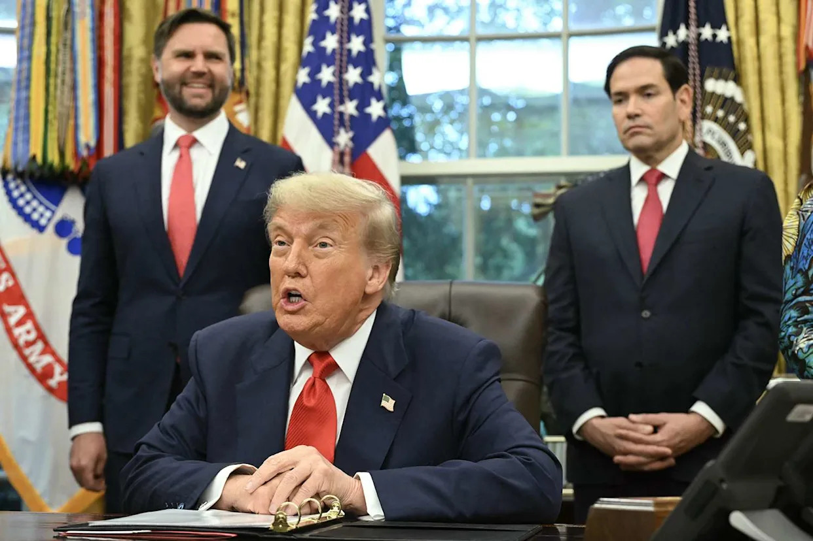
نخستین کاستی در تحلیل ونس، نگاه به ایران همچون یک رژیم اقتدارگرای معمولی است. جمهوری اسلامی صرفاً یک رژیم اقتدارگرا نیست؛ نظامی ایدئولوژیک و انقلابی است. دشمنی آن با آمریکا، خصومتش با اسرائیل، مأموریت انقلابی، اصل ولایت فقیه، اتکا به جنگهای نیابتی و مخالفت با دموکراسی لیبرال، مواضعی تاکتیکی یا موقتی برای چانهزنی نیستند؛ بلکه اجزای ساختاری این نظام به شمار میروند. یک چارچوب صرفاً واقعگرایانه ممکن است این واقعیت را دستکم بگیرد، زیرا جمهوری اسلامی تنها در پی حفظ بقای خود نیست، بلکه تحقق مأموریت ایدئولوژیکش را نیز دنبال میکند.
دومین کاستی، این فرض است که توافقها میتوانند به اعتدالی پایدار منجر شوند. واقعگرایان اغلب بر این باورند که ترکیب فشار و مشوقها میتواند رفتار بازیگران را تغییر دهد؛ این الگو زمانی بهترین کارکرد را دارد که بازیگر مورد نظر عمدتاً بر اساس منافع راهبردی عمل کند. اما جمهوری اسلامی پیچیدهتر از این است: این نظام بهصورت تاکتیکی مذاکره میکند، بهصورت تاکتیکی مصالحه میکند و بهصورت تاکتیکی عقبنشینی میکند، اما این انعطاف تاکتیکی را نباید با دگرگونی ایدئولوژیک اشتباه گرفت. توافقها ممکن است زمان بخرند، تحریمها را کاهش دهند، فرصتی برای تنفس ایجاد کنند و بقای رژیم را تسهیل نمایند؛ اما با کاهش فشار، رفتارهای بنیادین آن معمولاً دوباره آشکار میشوند. ماهیت بنیادین این نظام تغییر نمیکند.
سومین کاستی، این فرض است که بقای رژیم به معنای حفظ ثبات است. به نظر میرسد ونس از فروپاشی جمهوری اسلامی هراس دارد، زیرا آن را مترادف هرجومرج میداند؛ اما این پیشفرض خود بر این تصور استوار است که رژیم کنونی عامل ثبات است، در حالی که چنین نیست. جمهوری اسلامی از طریق حمایت از گروههای نیابتی، ایجاد زیرساختهای تروریستی، تشدید تنشهای منطقهای، دیپلماسی گروگانگیری، باجگیری هستهای و جنگ نامتقارن، بهطور فعال بیثباتی تولید میکند. بنابراین انتخاب واقعی میان «ثبات» و «هرجومرج» نیست، بلکه خود این رژیم منشأ دائمی بیثباتی است.
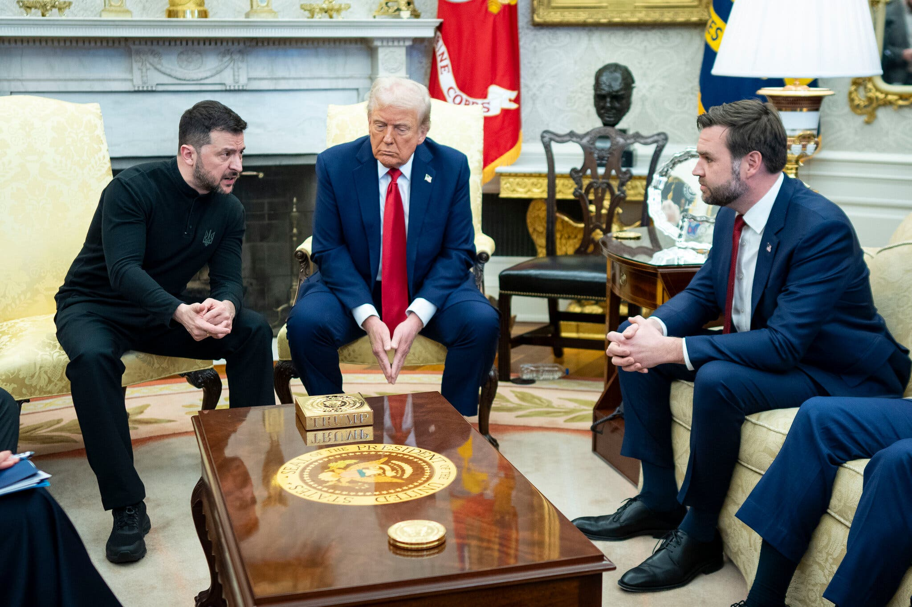
همین نکته ما را به مهمترین پرسش میرساند: چگونه میتوان ونس را متقاعد کرد؟
نخست باید پیوند ذهنی ریشهداری را که میان «تغییر رژیم» و «عراق» در ذهن او شکل گرفته، به چالش کشید. ایران، عراق نیست. تغییر رژیم در عراق مستلزم تهاجم نظامی آمریکا، اشغال کشور، فروپاشی کامل نهادهای حکومتی و ملتسازی تحت هدایت واشنگتن بود، اما ایران وضعیت متفاوتی دارد: این کشور دارای جامعهای آگاه از نظر سیاسی، دههها سابقه مقاومت در برابر جمهوری اسلامی، بحران عمیق مشروعیت حکومت روحانیت و جمعیتی بسیار تحصیلکرده است. گذار از جمهوری اسلامی الزاماً به معنای اشغال نظامی آمریکا نیست؛ بلکه میتواند از دل شکافهای داخلی، همراه با فشار خارجی، شکل بگیرد.
دوم، باید به او نشان داد که جمهوری اسلامی را نمیتوان بهطور پایدار میانهرو کرد. این نظام ممکن است مذاکره کند، مکث کند و در مقاطع مختلف عقبنشینی تاکتیکی داشته باشد، اما دشمنی آن با آمریکا، اسرائیل، دموکراسی لیبرال و حکومت سکولار بخشی از سرشت ایدئولوژیک آن است، نه واکنشی موقتی به شرایط. مسئله اصلی، خود این رژیم است.
سوم، باید این پیشفرض ونس را به چالش کشید که حفظ جمهوری اسلامی مانع هرجومرج میشود. پرسش دقیقتر این است که آیا وضعیت کنونی را اساساً میتوان «ثبات» نامید؟ رژیمی که از گروههای نیابتی حمایت مالی میکند، امنیت مسیرهای کشتیرانی را تهدید میکند، از سازمانهای شبهنظامی پشتیبانی میکند و بهطور مستمر منطقه را بیثبات میسازد، در حال حفظ نظم نیست؛ بلکه بینظمی دائمی تولید میکند. انتخاب واقعی میان «یک رژیم باثبات» و «فروپاشی آشفته» نیست؛ بلکه میان گذار مدیریتشده و تداوم بحرانی مزمن و تکرارشونده است.
در نهایت، این استدلال باید با زبان «اول آمریکا» مطرح شود، زیرا این همان زبانی است که ونس به آن پاسخ میدهد. ایرانی آزاد، به احتمال زیاد، به معنای کاهش حمایت از تروریسم، کاهش فعالیتهای ضدآمریکایی، کاهش خطر هستهای، کاهش تنشهای منطقهای و کاستن از باری خواهد بود که بر توان نظامی ایالات متحده تحمیل میشود. از این منظر، حمایت از مردم ایران نه نوعی آرمانگرایی سادهلوحانه، بلکه شکلی از واقعگرایی راهبردی است.
احتیاط معاون رئیسجمهور، جی. دی. ونس، در قبال تغییر رژیم قابل درک است. جنگ عراق درسهای دردناکی بر جای گذاشت و بدبینی او نسبت به عملکرد دستگاه سیاست خارجی آمریکا نیز بیدلیل نیست. با این حال، واقعگرایی زمانی به خطا میرود که الگویی تاریخی را، بدون توجه به تفاوتهای بنیادین، بر وضعیتی کاملاً متفاوت منطبق کند.
ایران، عراق نیست. جمهوری اسلامی نیز یک رژیم اقتدارگرای معمولی نیست که بتوان آن را برای همیشه با بازدارندگی، مذاکره و چانهزنی مدیریت کرد. این نظام ساختاری ایدئولوژیک و انقلابی دارد؛ ساختاری که تداوم آن، خود به تداوم بیثباتی در منطقه گره خورده است. مذاکرات شاید برای مدتی تنشها را کاهش دهند، اما در همان حال به رژیم فرصت میدهند تا خود را بازسازی کند، توانمندیهایش را بازیابد و بقای خود را تضمین کند. پرسش اساسی این نیست که آیا جمهوری اسلامی رژیمی نامطلوب است یا خیر؛ بلکه این است که آیا حفظ چنین رژیمی واقعاً در خدمت منافع ایالات متحده قرار دارد؟ پاسخ این پرسش، نزدیک به نیم قرن است که منفی بوده است.
از همین رو، حمایت از مردم ایران در برابر جمهوری اسلامی، تکرار تجربه عراق نیست؛ بلکه عملیترین و واقعبینانهترین مسیر برای دستیابی به ثبات پایدار در خاورمیانه و تأمین امنیت بلندمدت ایالات متحده به شمار میرود.
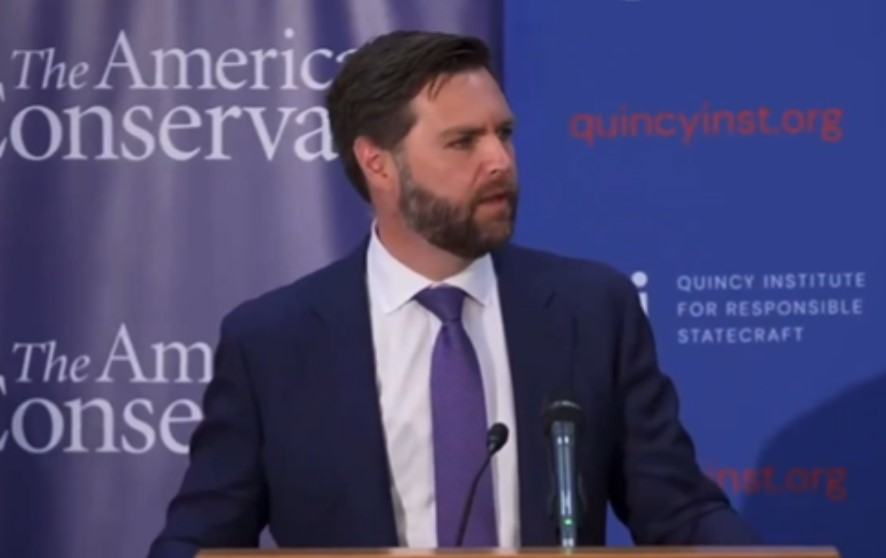
بسیاری از ایرانیان خارج از کشور، بهویژه کسانی که برای پایان دادن به جمهوری اسلامی تلاش میکنند، به دلیل آنچه ارتباط جی. دی. ونس با مؤسسه کوئینسی تلقی میشود، نسبت به او بدبیناند. این نگرانی بیاساس نیست، اما اغلب بهدرستی درک نمیشود. برخی تصور میکنند چون ونس در نشستها یا برنامههای مرتبط با کوئینسی حضور داشته یا از ادبیاتی مشابه استفاده میکند، پس ناگزیر با طرفداران تعامل نرم با جمهوری اسلامی همسو است، از جمله افرادی که بسیاری از مخالفان ایرانی آنان را مدافع یا توجیهگر رژیم میدانند. در مقابل، گروهی دیگر هرگونه ارتباط میان او و کوئینسی را کاملاً انکار میکنند. هر دو برداشت از ظرافتهای این موضوع غافلاند.
ونس در بدبینی نسبت به مداخله نظامی و جنگهای مبتنی بر تغییر رژیم، اشتراکات قابل توجهی با کوئینسی دارد، اما جهانبینی، انگیزهها و مفروضات راهبردی او با این مؤسسه یکسان نیست. مؤسسه کوئینسی برای حکمرانی مسئولانه (Quincy Institute for Responsible Statecraft) طیفی متنوع از لیبرتارینها، ترقیخواهان ضدجنگ، محافظهکاران طرفدار خویشتنداری، نظریهپردازان واقعگرا و منتقدان اجماع سیاست خارجی آمریکا پس از پایان جنگ سرد را گرد هم آورده است. با وجود اختلافهای ایدئولوژیک، اعضای این طیف در یک نکته اتفاق نظر دارند: ایالات متحده با مداخلات نظامی پیدرپی، بیش از حد توان و ظرفیت خود را درگیر کرده است. از نگاه آنان، جنگهای تغییر رژیم معمولاً به شکست میانجامند؛ مداخلات نظامی پیامدهای ناخواسته و پرهزینه به دنبال دارند؛ تحریمها ممکن است نتیجه معکوس بدهند؛ دیپلماسی باید در اولویت قرار گیرد؛ و «جنگهای بیپایان» در نهایت به تضعیف آمریکا منجر میشوند. این چارچوب فکری، عمدتاً از سرخوردگی نسبت به تجربه عراق، افغانستان، لیبی و سوریه شکل گرفته است.
بیشترین همپوشانی ونس با کوئینسی را میتوان در سه زمینه مشاهده کرد. نخست، او نیز مانند بسیاری از اعضای کوئینسی نسبت به مداخلهگرایی نومحافظهکاران بدبین است: به معماران جنگ عراق اعتماد ندارد، نسبت به ادبیات ترویج دموکراسی با تردید مینگرد، به خوشبینی درباره ملتسازی باور ندارد و معتقد است نخبگان واشنگتن معمولاً مداخلات نظامی را بیش از اندازه امیدوارکننده جلوه میدهند، در حالی که پیامدهای واقعی آنها را دستکم میگیرند. دوم، او مخالفتی عمیق با جنگهای مبتنی بر تغییر رژیم دارد؛ همانند بسیاری از اندیشمندان کوئینسی، نخستین پرسشی که به ذهن او میرسد این است: روز بعد چه خواهد شد؟ چه کسی حکومت خواهد کرد؟ و چه چیزی مانع از فروپاشی کشور یا گرفتار شدن آن در هرجومرج خواهد شد؟ همین نگاه توضیح میدهد که چرا درخواستها برای تغییر رژیم در ایران، اغلب او را متقاعد نمیکنند. سوم، او نیز معمولاً ترجیح میدهد به جای تهاجم نظامی یا اشغال یک کشور، از اهرمهایی مانند فشار، تحریم، بازدارندگی و مذاکره از موضع قدرت استفاده شود.
با این همه، این همپوشانی مرزهای روشنی دارد. ونس را نمیتوان صرفاً یک متفکر کوئینسی دانست. برخلاف بسیاری از مخالفان مداخله نظامی، بهویژه در جناح مترقی، او جهان را از دریچهای نمیبیند که قدرت آمریکا را سرچشمه اصلی بیثباتی جهانی بداند. در برخی از جریانهای طرفدار خویشتنداری، دولتهای رقیب عمدتاً بازیگرانی تلقی میشوند که واکنشی به رفتار ایالات متحده نشان میدهند؛ اگر این نگاه درباره ایران به کار گرفته شود، ممکن است نقش ایدئولوژی جمهوری اسلامی کمرنگ جلوه کند و این نظام صرفاً بهعنوان یک بازیگر امنیتی معرفی شود که با ارائه مشوقهای مناسب میتوان رفتار آن را تعدیل کرد.
ونس کاملاً در این چارچوب نمیگنجد. او نه ضدآمریکایی است و نه یک ضدامپریالیست چپگرا؛ او یک ملیگراست. نقطه آغاز اندیشه او این است که آمریکا منافع مشروعی دارد، باید از آنها دفاع کند، قدرت خود را حفظ کند و آن را در ماجراجوییهای راهبردیِ بیحاصل هدر ندهد. همین نکته، مهمترین تفاوت او با کوئینسی است. کوئینسی معمولاً سیاست خارجی را از منظر تحلیلهای کلان نظام بینالمللی بررسی میکند؛ مفاهیمی مانند چرخههای تشدید تنش، معمای امنیت و کاهش تنش از راه دیپلماسی، در مرکز تحلیل آن قرار دارند. اما ونس از دریچه «اول آمریکا» به سیاست خارجی مینگرد؛ پرسش محوری او بسیار سادهتر است: آیا این سیاست در خدمت منافع آمریکا قرار دارد؟
این تفاوت اهمیت زیادی دارد، زیرا ممکن است دو نفر هر دو با جنگ علیه ایران مخالف باشند، اما به دلایلی کاملاً متفاوت. یکی ممکن است با جنگ مخالفت کند، زیرا اساساً نسبت به کاربرد قدرت نظامی بدبین است؛ دیگری ممکن است جنگ را صرفاً راهبردی پرهزینه و ناکارآمد بداند. ونس بهمراتب به گروه دوم نزدیکتر است.
از این رو، نگرانی اصلی بسیاری از ایرانیان نباید این باشد که ونس در خفا با جمهوری اسلامی همدلی دارد؛ شواهد اندکی وجود دارد که نشان دهد او برای این رژیم احترام قائل است، مشروعیت آن را پذیرفته یا تبلیغاتش را باور کرده باشد. نگرانی عمیقتر آن است که غرایز واقعگرایانه او، جمهوری اسلامی را بهعنوان دشمنی سرسخت اما قابل مهار تحلیل کند؛ بازیگری که بتوان با بازدارندگی، چانهزنی و اعمال فشار، رفتارش را در چارچوبی قابل کنترل نگه داشت.
شاید همین، بزرگترین کاستی تحلیلی او باشد. جمهوری اسلامی صرفاً یک رژیم اقتدارگرای دیگر نیست که مانند سایر دولتها تنها در پی حفظ بقای خود باشد؛ این نظام، رژیمی ایدئولوژیک و انقلابی است. دشمنی آن با ایالات متحده، اسرائیل، دموکراسی لیبرال و حکومت سکولار، صرفاً تاکتیکی یا مقطعی نیست، بلکه بخشی از هویت بنیادین آن را تشکیل میدهد. همین واقعیت برای تحلیل صرفاً واقعگرایانه چالش اساسی ایجاد میکند. واقعگرایی بر این فرض استوار است که دولتهای رقیب پیش از هر چیز در پی بقا هستند و از همین رو میتوان از طریق بازدارندگی یا چانهزنی رفتار آنها را در بلندمدت تغییر داد؛ اما جمهوری اسلامی بارها نشان داده است که ایدئولوژی میتواند این منطق متعارف راهبردی را بر هم بزند.
به همین دلیل است که بسیاری از ایرانیان همچنان نگراناند. نگرانی آنان این نیست که ونس آگاهانه در کنار لابیگران جمهوری اسلامی قرار گرفته باشد؛ بلکه این است که بدبینی کاملاً موجه او نسبت به مداخله نظامی، باعث شود الگوی تحلیلی نادرستی را درباره ایران به کار گیرد.
برای کسانی که میخواهند بر ونس تأثیر بگذارند، متهم کردن او به «نزدیکی بیش از حد به کوئینسی» بعید است نتیجهای داشته باشد. راه مؤثرتر این است که بدبینی او نسبت به جنگ، احتیاطش درباره تجربه عراق و بیاعتمادیاش به نخبگان سیاست خارجی را بپذیرند و سپس مفروضه اصلی او را به چالش بکشند: باید به او نشان داد که ایران با الگوی متعارف واقعگرایانه سازگار نیست، که جمهوری اسلامی صرفاً یک رژیم اقتدارگرای دیگر نیست که بتوان تا ابد از طریق چانهزنی آن را مدیریت کرد، و که خود این رژیم منشأ تکرارشونده بیثباتی در منطقه است.
دقیقاً همینجاست که نقطه آسیبپذیر اندیشه ونس قرار دارد؛ و دقیقاً از همین نقطه است که امکان اقناع او آغاز میشود.
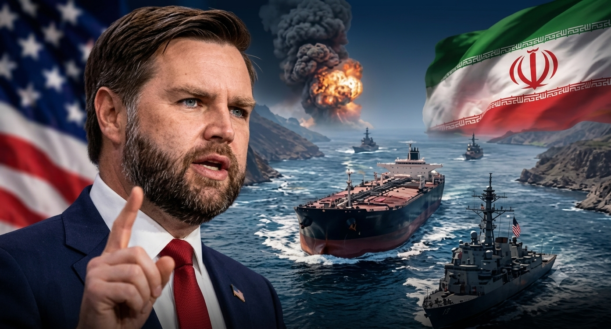
برای تأثیرگذاری بر جی. دی. ونس در موضوع ایران، صرفاً شناخت فلسفه سیاسی او کافی نیست؛ باید دریافت که او احتمالاً خودِ ایران را چگونه میبیند: مردم ایران، جمهوری اسلامی، خطرات فروپاشی رژیم، و نیز اینکه به چه نوع استدلالهایی بهطور غریزی اعتماد میکند یا با دیده تردید مینگرد. این نقشه ذهنی اهمیت دارد، زیرا شکست در اقناع، اغلب نه از کمبود اطلاعات، بلکه از چارچوب ذهنی متفاوت افراد ناشی میشود.
یکی از مهمترین پرسشها این است که آیا ونس میان ایران بهعنوان یک تمدن و جمهوری اسلامی بهعنوان یک رژیم تمایز روشنی قائل است یا نه. بسیاری از سیاستگذاران غربی ناخودآگاه این دو را یکی میپندارند؛ کافی است نام «ایران» را بشنوند تا بیدرنگ تصویر روحانیان حاکم، حجاب اجباری، شعارهای ضدآمریکایی، گروههای نیابتی و برنامه هستهای در ذهنشان شکل بگیرد. اما این خلط مفهومی برای ایران پیامدهای خطرناکی دارد. جمهوری اسلامی، ایران نیست؛ رژیمی است که ایران را به اسارت گرفته است.
ایران کشوری است که در آن ملیگرایان سکولار، مشروطهخواهان، لیبرالها، پادشاهیخواهان، دموکراسیخواهان، مخالفان سیاسی، نسل جوان ضد رژیم، اقلیتهای قومیِ معترض به تبعیض، و میلیونها زنی که به کانون اخلاقی مقاومت مدنی تبدیل شدهاند، حضور دارند. بزرگترین قربانی جمهوری اسلامی خود مردم ایران هستند. اگر ونس، حتی بهطور ناخودآگاه، مسئله را بهصورت «آمریکا در برابر ایران» صورتبندی کند، تحلیل خود را بر پیشفرضی نادرست بنا کرده است؛ چارچوب دقیقتر آن است که این تقابل را آمریکا و مردم ایران در برابر دشمنی مشترک، یعنی جمهوری اسلامی، بدانیم.
ونس احتمالاً نسبت به گروههای مخالف حکومت که از خارج از کشور در واشنگتن فعالیت میکنند نیز با دیده تردید مینگرد. این بدبینی بیدلیل به وجود نیامده است؛ پس از جنگ عراق، بسیاری از محافظهکاران آمریکایی نسبت به گروههای تبعیدی که وعده میدادند سقوط رژیم بهسرعت به آزادی، ثبات و دموکراسی خواهد انجامید، بیاعتماد شدند، و تجربه عراق، افغانستان، لیبی و سوریه این بدبینی را تشدید کرد. از همین رو، هنگامی که فعالان ایرانی خارج از کشور میگویند رژیم ضعیف شده، مردم آمادهاند و فروپاشی نزدیک است، ممکن است ونس ناخودآگاه همان وعدههایی را به یاد آورد که پیش از مداخلات فاجعهبار گذشته مطرح میشدند. غریزه او احتمالاً این است که گروههای تبعیدی آمادگی جامعه در داخل را بیش از اندازه برآورد میکنند و خطر بینظمی پس از فروپاشی را دستکم میگیرند. این مسئله توضیح میدهد که چرا حتی استدلالهای کاملاً درست علیه جمهوری اسلامی نیز ممکن است او را قانع نکنند؛ مانع اصلی، الزاماً تردید در خشونت و سرکوب رژیم نیست، بلکه بیاعتمادی به روایتهای خوشبینانه درباره دوران گذار است.
این موضوع به عامل مهم دیگری نیز پیوند میخورد: بدبینی عمیق ونس نسبت به خودِ مفهوم انقلاب. او صرفاً یک محافظهکار سیاسی، به معنای متعارف حزبی، نیست؛ بلکه از نظر سرشت فکری نیز محافظهکار است. او برای نظم، تداوم، انسجام نهادها و ثبات اجتماعی ارزش زیادی قائل است؛ فروپاشی ناگهانی یک نظام سیاسی، در ذهن او بیش از آنکه یادآور آزادی باشد، تداعیکننده خلأ قدرت، تجزیه، رادیکالیزه شدن نیروها و ظهور بازیگران خطرناکتر است. واژههایی مانند «قیام»، «سرنگونی» یا «انقلاب» ممکن است برای بسیاری از ایرانیان مخالف جمهوری اسلامی الهامبخش باشند، اما برای ونس بیشتر حکم زنگ خطر را دارند؛ او با شنیدن این واژهها، بیش از آنکه گذار دموکراتیک را به خاطر آورد، به یاد لیبی، سوریه یا عراق میافتد.
از همین رو، اگر قرار است درباره تغییر رژیم با او گفتوگو شود، نباید آن را بهعنوان گسستی انقلابی و ناگهانی تصویر کرد؛ این روند باید در قالب مفاهیمی مانند گذار مدیریتشده، شکاف در میان نخبگان حاکم، فرسایش مشروعیت داخلی و بازسازی تدریجی نظم سیاسی توضیح داده شود. چنین زبانی بسیار بیشتر با غرایز فکری او سازگار است.
دین نیز لایه دیگری به این تحلیل میافزاید. ونس تحت تأثیر محافظهکاری اخلاقی مسیحی قرار دارد و نسبت به جوامعی که بر ایمان، سنت، خانواده و نظم اخلاقی استوارند، همدلی نشان میدهد. همین امر میتواند به نوعی همذاتپنداری نادرست بینجامد: ممکن است او، حتی بهطور ناخودآگاه، جمهوری اسلامی را جامعهای تصور کند که از سر باور دینی، در برابر افراطگرایی سکولار و لیبرال مقاومت میکند.
این برداشت خطایی بسیار خطرناک است. جمهوری اسلامی یک جامعه سنتی و مذهبی نیست که در پی حفظ نظم اخلاقی باشد؛ این نظام یک الیگارشی روحانیِ تمامیتخواه است که دین را به ابزاری برای تحمیل اطاعت تبدیل کرده است. در جمهوری اسلامی، دین از اجبار، فساد، نظارت امنیتی، سرکوب و خشونت جداشدنی نیست؛ زبان اخلاقی حکومت پوششی برای شکنجه، اعدام، سرکوب جنسی، تحقیر سازمانیافته شهروندان، شستوشوی ایدئولوژیک و ریاکاری نهادینه است. بنابراین نباید جمهوری اسلامی را صرفاً شکلی دیگر از محافظهکاری دینی تلقی کرد؛ این نظام استبدادی ایدئولوژیک است که جامه الهیات بر تن کرده است. یکی از جدیترین خطاهایی که محافظهکاران غربی ممکن است درباره ایران مرتکب شوند، خلط میان احترام به خداوند و اطاعت از کسانی است که مدعی سخن گفتن به نام او هستند.
در عین حال، نباید ونس را با یک صلحطلب مطلق اشتباه گرفت. مخالفت او با مداخله نظامی، به معنای مخالفت با استفاده از قدرت نیست؛ به نظر میرسد او زمانی از بهکارگیری قدرت حمایت میکند که اقدام مورد نظر محدود، قاطع، از نظر راهبردی منسجم و بهروشنی در خدمت منافع آمریکا باشد. او بهمراتب بیشتر از عملیات مخفی، اقدامات سایبری، تحریمهای هدفمند علیه نخبگان رژیم، حمایت از شکافهای درونی حکومت و اقدامات بازدارنده نظامی حمایت میکند تا از تهاجم گسترده، اشغال نظامی یا ملتسازی. این تمایز اهمیت فراوانی دارد، زیرا نشان میدهد مسیر واقعی اقناع او از کجا میگذرد: هر استدلالی که مستلزم اعزام نیروهای آمریکایی به خاک ایران باشد، تقریباً محکوم به شکست است، اما استدلالهایی که بر افزایش فشار راهبردی برای تسریع فرسایش درونی رژیم تکیه دارند، با جهانبینی او سازگاری بسیار بیشتری دارند.
شاید مهمترین کاستی تحلیلی ونس، برداشت او از مفهوم ثبات باشد. او، مانند بسیاری از واقعگرایان، احتمالاً بهطور غریزی بقای رژیم را با نظم و فروپاشی آن را با هرجومرج برابر میداند؛ اما این پیشفرض در مورد ایران بهشدت گمراهکننده است. جمهوری اسلامی حافظ ثبات منطقه نیست، بلکه بهطور نظاممند بیثباتی صادر میکند؛ از طریق گروههای نیابتی، شبکههای تروریستی، دیپلماسی گروگانگیری، باجگیری هستهای، جنگ نامتقارن و صدور ایدئولوژی، این رژیم به یکی از مهمترین سرچشمههای بیثباتی مزمن در خاورمیانه تبدیل شده است. بنابراین حفظ چنین رژیمی را نمیتوان بهطور خودکار معادل حفظ صلح دانست؛ انتخاب واقعی میان «ثبات» و «هرجومرج» نیست، بلکه میان گذار مدیریتشده و تداوم چرخهای از بیثباتی دائمی است. این تمایز برای متقاعد کردن فردی با غرایز واقعگرایانه، اهمیت اساسی دارد.
شناخت ونس مستلزم درک این نکته نیز هست که چه روایتهایی از نظر عاطفی بر او اثر میگذارند. سیاست او همواره به مضامینی مانند خیانت نخبگان، فساد، بهرهکشی از مردم عادی و فاصله طبقه حاکم از رنج شهروندان حساس بوده است؛ همین امر فرصتی مهم برای بازتعریف مسئله ایران، با زبانی هماهنگ با شهود اخلاقی او، فراهم میکند. جمهوری اسلامی صرفاً یک دولت خارجیِ دشمن نیست؛ این نظام طبقه حاکمی فاسد و انگلی است که در حالی که ثروت و قدرت را برای خود و شبکههای وابستهاش انباشته میکند، خانوادههای عادی ایرانی را زیر بار تورم، سرکوب، ناامیدی و آیندهای ربودهشده رها کرده و همزمان خشونت را به خارج از مرزهای ایران صادر میکند. اگر رژیم بهعنوان نخبگانی غارتگر تصویر شود که بر مردمی رهاشده و بیپناه حکومت میکنند، این تصویر مستقیماً با غرایز سیاسی ونس همخوانی خواهد داشت.
در نهایت، باید پرسید کدام قیاس تاریخی بر ذهن ونس درباره ایران حاکم است. انسانها معمولاً بر پایه انتزاع محض استدلال نمیکنند؛ آنها جهان را از خلال قیاسهای تاریخی میفهمند. خطرناکترین حالت آن است که ونس ایران را پیش از هر چیز از دریچه عراقِ ۲۰۰۳، لیبیِ ۲۰۱۱، افغانستان یا سوریه ببیند؛ اگر این چارچوب ذهنی بر تحلیل او حاکم باشد، هر بحثی درباره تغییر رژیم بیدرنگ نگرانی از اشغال، فروپاشی و جنگی بیپایان را در ذهنش زنده خواهد کرد.
دقیقاً همین قیاس تاریخی باید به چالش کشیده شود. ایران را نباید در درجه نخست از دریچه فروپاشی دولت بر اثر تهاجم خارجی فهمید؛ قیاس دقیقتر را شاید بتوان در سالهای پایانی بلوک شوروی جستوجو کرد: فرسودگی ایدئولوژیک، از دست رفتن مشروعیت داخلی، شکاف در میان نخبگان، شکست اقتصادی، فرو ریختن دیوار ترس و در نهایت، فروپاشی تدریجی نظام از درون. این الگویی کاملاً متفاوت است.
شاید این مهمترین چالشی باشد که پیش روی هر کسی قرار دارد که میخواهد بر ونس تأثیر بگذارد. مسئله فقط این نیست که او را متقاعد کنیم جمهوری اسلامی رژیمی شرور است؛ این بخش نسبتاً آسانتر است. دشوارترین کار آن است که الگوی تاریخیای را که او از خلال آن ایران را تفسیر میکند، تغییر دهیم. اگر ایران را «عراقی دیگر» ببیند، بهطور طبیعی جانب احتیاط را خواهد گرفت؛ اما اگر آن را رژیمی ایدئولوژیک، فرسوده و از درون تهی ببیند که بقای آن به تداوم بیثباتی میانجامد، محاسبات راهبردی او ممکن است بهتدریج تغییر کند. دقیقاً در همین نقطه است که عمیقترین و مؤثرترین اقناع امکانپذیر میشود.
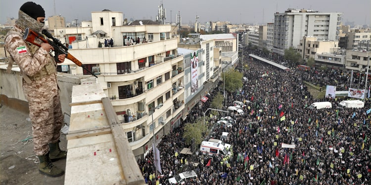
برای متقاعد کردن جی. دی. ونس درباره ایران، صرفاً استدلالهای راهبردی کافی نیست. در کنار آنها، باید به سوءبرداشتی عمیقتر نیز پرداخت که گاه در میان محافظهکاران مذهبی غرب شکل میگیرد: اشتباه گرفتن زبان دینی با مشروعیت اخلاقی.
ونس، تحت تأثیر محافظهکاری اخلاقی مسیحی، دغدغهای جدی نسبت به افول تمدنی غرب دارد. به همین دلیل، بهطور طبیعی با جوامعی احساس همدلی میکند که به نظر میرسد از ایمان، خانواده، سنت، پیوندهای اجتماعی و نظم اخلاقی در برابر افراطهای مدرنیته سکولار و لیبرال دفاع میکنند؛ او از فردگرایی افراطی، مصرفزدگی، پوچگرایی فرهنگی و فروپاشی اخلاقیای که به باور او نخبگان آن را تشدید کردهاند، انتقاد میکند. همین پیشزمینه فکری، خطری ظریف اما مهم در نحوه برداشت او از جمهوری اسلامی ایجاد میکند.
جمهوری اسلامی از واژگانی استفاده میکند که برای او آشناست: از خدا سخن میگوید، ابتذال اخلاقی را محکوم میکند، بر ارزش خانواده تأکید دارد، از فساد اخلاقی انتقاد میکند، مادیگرایی غرب را نکوهش میکند و خود را مدافع تمدنی معنوی در برابر آشفتگی لیبرال معرفی میکند. برای کسی که از پیش مدرنیته سکولار را از نظر اخلاقی فرساینده میداند، چنین ادبیاتی ممکن است نوعی همذاتپنداری نادرست ایجاد کند؛ این تصور که با وجود اختلافهای سیاسی، میان دو طرف دستکم دغدغهای مشترک درباره حفظ تمدن و اخلاق وجود دارد. اما این تصور بهکلی نادرست است.
جمهوری اسلامی یک جامعه سنتی و مذهبی نیست که از نظم اخلاقی دفاع کند. این نظام تمدنی محافظهکار نیست که ایمان را در برابر ابتذال حفظ کرده باشد؛ حتی نمیتوان آن را صرفاً شکلی از حکومت دینی، به معنای متعارف این واژه، دانست. جمهوری اسلامی یک الیگارشی روحانیِ تمامیتخواه است که دین را به ابزاری برای قدرت، اجبار و کنترل جامعه تبدیل کرده است. این تمایز بنیادی و سرنوشتساز است.
جمهوری اسلامی از دین پاسداری نمیکند؛ دین را به سلاح تبدیل میکند. ایمان را تعالی نمیبخشد، بلکه آن را در خدمت سلطه سیاسی قرار میدهد. فضیلت را پرورش نمیدهد، بلکه اطاعت را تحمیل میکند و در همان حال، فساد، خشونت و همرنگی ایدئولوژیک را پاداش میدهد. این، نظم اخلاقی نیست؛ این، ریاکاری سازمانیافته است.
برای سیاستمداری مانند ونس، که جهانبینی او عمیقاً تحت تأثیر خیانت نخبگان فاسد به مردم عادی شکل گرفته، این نکته باید اهمیت ویژهای داشته باشد. جمهوری اسلامی، در بنیاد خود، دقیقاً همان نوع طبقه حاکمی است که او بهطور غریزی به آن بیاعتماد است: گروهی از نخبگان که برای حفظ موقعیت خود از زبان اخلاق استفاده میکنند، اما در عمل بر پایه فساد، بهرهکشی و غارت حکومت میکنند.
رهبران روحانی این نظام خود را حامی مستضعفان، مدافع فقرا و پاسدار مؤمنان معرفی میکنند؛ اما در عمل، یکی از فاسدترین ساختارهای سیاسی خاورمیانه معاصر را پدید آوردهاند. شبکههای گستردهای وابسته به حکومت، نهاد روحانیت و سپاه پاسداران، امپراتوریهای عظیم اقتصادی، انحصارهای تجاری، شبکههای قاچاق، پروژههای بزرگ عمرانی، داراییهای انرژی و شبکههای مالی را در اختیار دارند. ثروت و امتیاز در اطراف خانوادهها و حلقههای نزدیک به قدرت انباشته میشود، در حالی که شهروندان عادی ایران با تورم، خفگی اقتصادی، بیکاری و کاهش مستمر سطح زندگی دستوپنجه نرم میکنند. این جامعهای مبتنی بر عدالت نیست؛ این طبقهای حاکم و انگلی است که ثروت را از مردمی دربند استخراج میکند.
این تصویر باید برای ونس آشنا باشد، زیرا بخش بزرگی از ادبیات سیاسی او در داخل آمریکا نیز دقیقاً بر همین الگوی اخلاقی استوار است: طبقهای حاکم که خود را ثروتمندتر میکند، در حالی که هزینه آن را خانوادههای عادی میپردازند. جمهوری اسلامی نمونهای افراطی از همین الگوست.
ریاکاری این نظام تنها به حوزه اقتصاد محدود نمیشود؛ به همان ارزشهای اخلاقی نیز سرایت کرده که حکومت مشروعیت خود را بر پایه آنها بنا کرده است. جمهوری اسلامی خود را مدافع خانواده و اخلاق عمومی معرفی میکند، اما در عمل خانواده را بهعنوان بنیادیترین نهاد اجتماعی تضعیف کرده است. خانوادهها همواره در سایه ترس از نظارت امنیتی، بازداشت، پلیس ایدئولوژیک و دخالت اجباری حکومت در زندگی خصوصی خود زندگی میکنند؛ پدر و مادر نگراناند که مبادا فرزندشان سخنی بر زبان آورد که برای او دردسر بیافریند، و کودکان از همان سالهای نخست زندگی میآموزند که گفتن حقیقت در عرصه عمومی ممکن است مجازات به دنبال داشته باشد. اعتماد بهتدریج فرسوده میشود، سکوت به ابزار بقا تبدیل میشود، و ترس به درون خانه راه پیدا میکند.
دولتی که دینداری را با زور تحمیل میکند، هرگز فضیلت نمیآفریند؛ بر پایه ترس، هرگز نمیتوان نظمی اخلاقی و سالم بنا کرد. حاصل چنین رویکردی نه ایمان، بلکه دورویی، بدبینی و ازهمگسیختگی اخلاقی است. شهروندان بهتدریج میآموزند که دو زندگی متفاوت داشته باشند: یکی برای حکومت و دیگری برای زندگی خصوصی؛ همرنگی در عرصه عمومی و ناباوری در خلوت، به رفتاری عادی تبدیل میشود. نتیجه، جامعهای دیندار نیست، بلکه جامعهای عمیقاً زخمی و آسیبدیده است.
شاید این یکی از بزرگترین سوءبرداشتهایی باشد که محافظهکاران غربی ممکن است درباره جمهوری اسلامی داشته باشند. نباید زبان دینی را با صداقت دینی اشتباه گرفت. حکومتی که زنان را با تهدید و اجبار وادار به اطاعت میکند، بر بدن انسانها با خشونت حکومت میراند و هر صدای مخالفی را با زندان و سرکوب پاسخ میدهد، حافظ اخلاق نیست؛ بلکه اعتبار اخلاقی دین را از درون نابود میکند.
در واقع، یکی از مهمترین پیامدهای جمهوری اسلامی، بیاعتبار شدن گسترده مرجعیت روحانیت در نگاه بخش بزرگی از جامعه ایران بوده است. دههها حکومت دینِ مبتنی بر اجبار، بسیاری از ایرانیان را نه فقط از حکومت، بلکه از نهاد دین نیز دور کرده است؛ میلیونها نفر که شاید در شرایطی دیگر همچنان پیوندی فرهنگی یا معنوی با دین حفظ میکردند، امروز دین را با تحقیر، خشونت و سلطه حکومتی تداعی میکنند. جمهوری اسلامی ایمان را تقویت نکرده است؛ بلکه در عمل به تهی شدن آن از درون کمک کرده است. این دفاع از سنت نیست؛ این تباه کردن سنت است.
همچنین نباید گمان کرد که شعارهای ضدغربی جمهوری اسلامی نشانهای از مقاومت اخلاقی در برابر ابتذال غرب است. این رژیم در حالی از فساد غرب سخن میگوید که خود فرهنگی مبتنی بر امتیازطلبی، خویشاوندسالاری و تجملگرایی را پرورش داده است. فرزندان بسیاری از صاحبان قدرت زندگیهایی سرشار از رفاه و تجمل دارند، در بهترین دانشگاههای جهان تحصیل میکنند، از امکانات و آزادیهایی بهرهمندند که برای شهروندان عادی دستنیافتنی است و از سبک زندگیای برخوردارند که خود حکومت آن را برای دیگران نکوهش میکند. ریاضت و قناعت برای مردم تبلیغ میشود، اما امتیاز و رفاه نصیب وابستگان به قدرت میگردد. این انضباط اخلاقی نیست؛ این اشرافیتی ریاکارانه است که در پوشش شعارهای انقلابی پنهان شده است.
وقتی به نحوه برخورد جمهوری اسلامی با کرامت انسانی بنگریم، سازگار دانستن آن با هر نظام اخلاقی جدی دشوارتر نیز میشود. شکنجه، بازداشتهای خودسرانه، اعترافات اجباری، اعدام، آزار جنسی در بازداشتگاهها، سرکوب اعتراضات و تحقیر سازمانیافته شهروندان، تخلفاتی حاشیهای یا استثنایی نیستند؛ اینها ابزارهای ساختاری حکومتداریاند. جمهوری اسلامی تنها برای مجازات مخالفان به ترس متوسل نمیشود؛ از ترس برای شکل دادن به ذهن و رفتار جامعه استفاده میکند. این نکته اهمیت بنیادین دارد، زیرا هر نظم سیاسی که مدعی اخلاق باشد، پیش از هر چیز باید بر کرامت ذاتی انسان استوار باشد. صرفنظر از اینکه کسی به چه سنت دینی یا الهیاتی باور دارد، هیچ آیین دینی جدی نمیتواند حکومتی را که بر ارعاب مردم خود بنا شده و در عین حال مدعی برتری اخلاقی است، توجیه کند.
دقیقاً در همین نقطه است که تفاوت میان محافظهکاری اصیل و اقتدارگرایی روحانی آشکار میشود. دغدغه واقعی یک اندیشه محافظهکار درباره خانواده، سنت و نظم اخلاقی بر پرورش فضیلت، مسئولیتپذیری، تداوم فرهنگی و اعتماد میان نسلها استوار است؛ جمهوری اسلامی تقریباً همه این بنیانها را بهطور نظاممند تضعیف کرده است. این رژیم اعتماد را از میان میبرد، اعتبار نهادها را نابود میکند، دروغگویی را به رفتاری عقلانی تبدیل میکند، ایمان را سیاسی میسازد، نهادهای اجتماعی را فاسد میکند و دین را به ابزاری برای سلطه بدل میسازد.
ایدئولوژی جمهوری اسلامی را نیز نمیتوان از خشونتی که فراتر از مرزهای ایران اعمال میکند جدا دانست. این رژیم تنها در داخل کشور سرکوب نمیکند؛ از طریق گروههای نیابتی، شبهنظامیان، شبکههای تروریستی، دیپلماسی گروگانگیری و جنگ ایدئولوژیک، قدرت انقلابی خود را به خارج از مرزها صادر میکند. دشمنی آن با ایالات متحده، اسرائیل، دموکراسی لیبرال و حکومت سکولار، امری اتفاقی یا صرفاً تاکتیکی نیست؛ در هویت این نظام ریشه دارد و از طریق نهادهای آن بازتولید میشود.
از همین رو، جمهوری اسلامی را نباید صرفاً جامعهای محافظهکار با پیشفرضهای دینی متفاوت تلقی کرد. این نظام پدیدهای بهمراتب تاریکتر است: ساختاری که قدرت اقتدارگرای دولت را با مشروعیت قدسی درهم آمیخته، بهگونهای که مخالفت سیاسی بهصورت نافرمانی از امر الهی جلوه داده شود. همین پیوند، جمهوری اسلامی را به نظامی بهویژه خطرناک تبدیل میکند، زیرا قدرت را از پاسخگویی مصون میسازد؛ هنگامی که حاکمان ادعا میکنند نه بر پایه قانون یا رضایت مردم، بلکه به نیابت از اراده الهی حکومت میکنند، مخالفت با آنان دیگر صرفاً اختلافی سیاسی تلقی نمیشود، بلکه به گناهی مقدسستیزانه تبدیل میشود.
برای محافظهکاران مذهبی در غرب، این تمایز اهمیتی حیاتی دارد. احترام به خداوند هرگز نباید با اطاعت از کسانی که مدعی سخن گفتن به نام خدا هستند اشتباه گرفته شود؛ احترام به ایمان نیز هرگز نباید به معنای تسلیم اخلاقی در برابر کسانی باشد که دین را به ابزاری برای استبداد تبدیل کردهاند.
شاید این مهمترین استدلال اخلاقی باشد که باید برای جی. دی. ونس مطرح کرد. جمهوری اسلامی را نباید تمدنی دینی دانست که، هرچند کاستیهایی دارد، صادقانه در برابر افراطهای لیبرالیسم ایستاده است؛ این نظام را باید همانگونه که هست دید: طبقهای حاکم، روحانی، فاسد و خودحفاظتگر که از زبان دین برای حفظ قدرت استفاده میکند، در حالی که همان مردمی را که مدعی حمایت از آنان است سرکوب میکند. از این منظر، جمهوری اسلامی درمان افول تمدنی نیست؛ خود شکلی دیگر از همان افول است.
فساد و تباهی این نظام را نباید صرفاً در بیبندوباری جنسی یا مصرفگرایی افراطی جستوجو کرد. انحطاط واقعی آن فساد معنوی است؛ فسادی که هنگامی پدید میآید که زبان مقدس دین به پوششی برای دروغ، غارت، خشونت و سلطه تبدیل شود. شاید این نوع فساد حتی از ابتذال سکولار نیز خطرناکتر باشد، زیرا همان ارزشهای اخلاقی را که مدعی دفاع از آنهاست، از درون بیاعتبار و آلوده میکند.
از همین رو، هر کسی که بخواهد ونس را متقاعد کند، باید استدلال خود را از همین نقطه آغاز کند: جمهوری اسلامی شریک دفاع از ایمان، خانواده یا نظم اخلاقی نیست. این رژیم نمونهای زنده از آن چیزی است که رخ میدهد وقتی دین به اسارت قدرت درمیآید و به ابزاری برای استبداد تبدیل میشود. این محافظهکاری نیست؛ این فروپاشی اخلاقی در جامهای مقدس است.
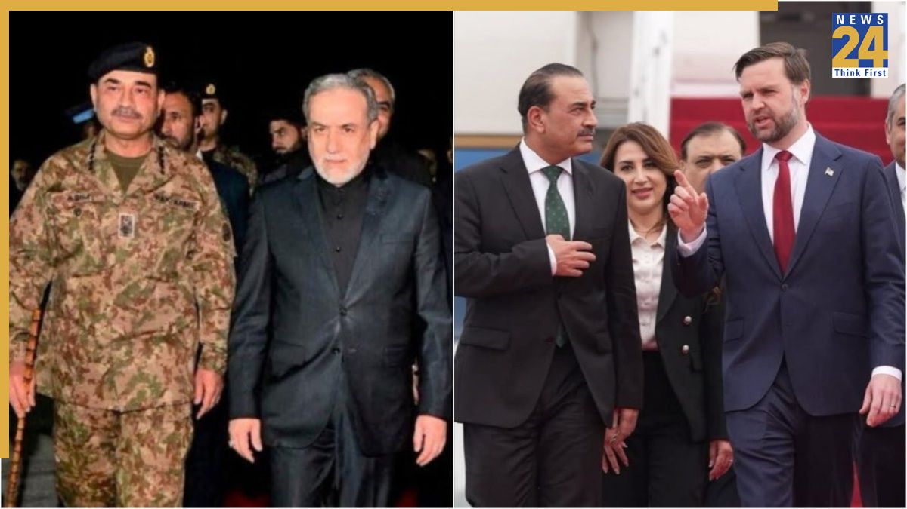
اگر بخواهیم دریابیم جی. دی. ونس در تحلیل خود از ایران ممکن است کجا دچار خطا شود، باید به یکی از بنیادیترین پرسشهای چارچوب فکری او پاسخ دهیم: آیا میتوان جمهوری اسلامی را از طریق فشار، بازدارندگی و توافقهای دیپلماتیک، در بلندمدت مهار و مدیریت کرد؟
پاسخ به این پرسش اهمیت فراوانی دارد، زیرا غرایز سیاسی ونس بهطور طبیعی او را به سوی مذاکره، بیش از جنگ، سوق میدهد. برای کسی که تجربه عراق را هشداری تاریخی میداند و نسبت به مداخلات نظامی عمیقاً بدبین است، دیپلماسی بهنظر منطقیترین راه میانه میآید: اگر حمله نظامی بیپروا و انفعال نیز خطرناک باشد، مذاکرهای سختگیرانه که بر پایه فشار و اهرمهای قدرت پیش برود، میتواند محتاطانهترین گزینه به نظر برسد. برای بسیاری از دولتهای رقیب، این منطق کاملاً قابل دفاع است.
اما درباره جمهوری اسلامی، اتکا به چنین منطقی میتواند به نتیجهای گمراهکننده بینجامد. مسئله این نیست که جمهوری اسلامی حاضر به مذاکره نیست؛ برعکس، این نظام بارها نشان داده که در مذاکره مهارت دارد. دیپلماتهای آن میتوانند منضبط، صبور، پیچیده و از نظر تاکتیکی انعطافپذیر باشند. مسئله جای دیگری است: جمهوری اسلامی مذاکره را، پیش از آنکه راهی برای عادیسازی پایدار روابط بداند، ابزاری برای تضمین بقای خود تلقی میکند.
همین تفاوت کلید فهم رفتار این رژیم است. بیشتر سیاستگذاران غربی دیپلماسی را فرایندی میدانند که در نهایت باید به تغییر رفتار بلندمدت طرف مقابل بینجامد؛ در این نگاه فشار انگیزه ایجاد میکند، انگیزه به مصالحه میانجامد، و مصالحه زمینه اعتدال را فراهم میکند. این الگو بر یک پیشفرض استوار است: اینکه طرف مقابل نیز در نهایت خواهان همزیستی باثبات، بر پایه قواعدی قابل قبول، است. اما تجربه جمهوری اسلامی بارها نشان داده است که این پیشفرض قابل اتکا نیست.
فرهنگ راهبردی این نظام صرفاً بر محاسبات متعارف منافع ملی بنا نشده است؛ ایدئولوژی انقلابی، منطق نبرد نامتقارن و تلاش دائمی برای حفظ نظام، بخش جداییناپذیر آن است. از همین رو، مذاکره در نگاه جمهوری اسلامی، بیش از آنکه ابزاری برای پایان دادن به منازعه باشد، نوعی مانور تاکتیکی است. هر زمان الزم بداند مذاکره میکند، هر زمان الزم باشد امتیاز میدهد، در صورت ضرورت عقبنشینی میکند و هرگاه شرایط را مناسب ببیند، دوباره تنش را افزایش میدهد. این انعطافپذیری تاکتیکی را نباید با اعتدال ایدئولوژیک اشتباه گرفت؛ اغلب این رفتار نشانه صبر راهبردی است، نه تغییر باورهای بنیادین.
دقیقاً در همین نقطه است که بسیاری از تحلیلگران دچار خطا میشوند: آنها از مشاهده یک مصالحه تاکتیکی، نتیجه میگیرند که دگرگونی راهبردی در حال وقوع است. حال آنکه این دو یکسان نیستند.
جمهوری اسلامی بارها نشان داده است که وقتی تحت فشار قرار میگیرد، حاضر است برخی فعالیتها را متوقف کند، به تعویق بیندازد، از شدت تنش بکاهد یا حتی موقتاً محدود سازد؛ اما چنین امتیازهایی معمولاً با هدف کاهش فشار فوری، شکستن انزوای بینالمللی، ایجاد فضای تنفس اقتصادی، ایجاد شکاف میان مخالفان و در نهایت حفظ تداوم رژیم ارائه میشوند. به بیان دیگر، مذاکره برای جمهوری اسلامی بخشی از فناوری بقاست.
دیپلماسی برای جمهوری اسلامی میتواند همزمان چند هدف را دنبال کند: خریدن زمان، کاهش فشار تحریمها، بازیابی توان اقتصادی، کسب مشروعیت بیشتر در عرصه بینالمللی، ایجاد شکاف میان رقبای خارجی و به تعویق انداختن رویاروییهای سرنوشتساز. تحقق هیچیک از این اهداف مستلزم تغییر واقعی در ماهیت ایدئولوژیک رژیم نیست. از همین روست که توافق با جمهوری اسلامی بارها در غرب خوشبینیهایی پدید آورده که دوام چندانی نداشته است. کاهش موقت تنش ممکن است در نگاه نخست نشانه پیشرفت راهبردی به نظر برسد، اما آرامش الزاماً به معنای تحول نیست؛ گاه دورهای از آرامش، چیزی جز فرصتی برای بازسازی توان و تجدید قوا نیست. در تمام این مدت، بنیادهای ایدئولوژیک نظام دستنخورده باقی میمانند.
دشمنی جمهوری اسلامی با ایالات متحده صرفاً واکنشی به سیاستهای واشنگتن نیست؛ این دشمنی در تار و پود هویتی نظامی تنیده شده که پس از انقلاب ۱۳۵۷ شکل گرفت. مخالفت با نفوذ آمریکا، خصومت با اسرائیل، رد نظم لیبرال دموکراتیک و اصرار بر تعریف انقلابی از هویت سیاسی، صرفاً بخشی از سیاست خارجی جمهوری اسلامی نیستند؛ این مؤلفهها از عناصر سازنده هویت این نظام به شمار میروند. همین ویژگی، دستیابی به توافقی پایدار را به چالشی جدی تبدیل میکند: دقیقاً یک رژیم میتواند در تاکتیکهای خود انعطاف نشان دهد، بیآنکه از خصومت راهبردی خود دست بردارد. به همین دلیل است که جمهوری اسلامی را نمیتوان با الگوهای متعارف چانهزنی و مصالحه بهآسانی مدیریت کرد.
البته این بدان معنا نیست که جمهوری اسلامی رفتاری غیرعقلانی دارد. این نظام نه اهل خودکشی سیاسی است و نه از محاسبه هزینه و فایده ناتوان؛ در موقعیتهای مشخص میتوان آن را بازداشت و حتی به خویشتنداری تاکتیکی واداشت. اما نباید بازدارندگی را با دگرگونی اشتباه گرفت. جمهوری اسلامی میتواند در محاسبات راهبردی واقعبین باشد، در عین حال که همچنان به اصول ایدئولوژیک خود وفادار میماند. این تمایز برای فردی مانند ونس، که نگاه واقعگرایانهاش بر بازدارندگی و استفاده از اهرمهای فشار استوار است، اهمیت ویژهای دارد.
واقعگرایی زمانی بهترین کارکرد را دارد که با بازیگرانی سروکار داشته باشد که رفتارشان عمدتاً بر پایه بقا، توازن قدرت و منافع مادی شکل میگیرد؛ اما جمهوری اسلامی این الگو را با پیچیدگی روبهرو میکند، زیرا تعهدات ایدئولوژیک آن بارها منطق متعارف محاسبات راهبردی را تحتالشعاع قرار داده است. رهبران این نظام بارها نشان دادهاند که حاضرند برای حفظ مشروعیت ایدئولوژیک و استمرار رژیم، هزینههایی چون رکود اقتصادی، نارضایتی داخلی و حتی انزوای طولانیمدت را بپذیرند. این واقعیت مذاکره را ناممکن نمیکند، اما دستیابی به تغییری پایدار در رفتار رژیم را بسیار دشوارتر از آن چیزی میسازد که بسیاری از واقعگرایان تصور میکنند.
مرور تجربه چند دهه تعامل با جمهوری اسلامی نیز همین الگو را تأیید میکند. دورههای مذاکره اغلب به دورهای از خویشتنداری موقت انجامیدهاند، اما با کاهش فشارهای خارجی، روند تشدید تنشها دوباره از سر گرفته شده است. کاهش تحریمها به اکسیژن مالی رژیم تبدیل شده؛ بهبود شرایط اقتصادی توان سرکوب داخلی را افزایش داده؛ و عادیتر شدن روابط دیپلماتیک، بدون آنکه تغییری در بنیانهای ایدئولوژیک نظام ایجاد کند، از فشارهای خارجی کاسته است. افزون بر این، منابعی که در نتیجه کاهش تنش آزاد شدهاند، در مواردی بهطور غیرمستقیم همان نهادهایی را تقویت کردهاند که منشأ اصلی رفتارهای بیثباتکننده جمهوری اسلامی هستند؛ بهویژه شبکههای وابسته به سپاه پاسداران و ساختار نیروهای نیابتی آن در منطقه.
همین واقعیت ونس را با حقیقتی دشوار روبهرو میکند: ممکن است یک توافق از نظر فنی موفق باشد، اما از نظر راهبردی شکست بخورد. یک توافق میتواند برنامه هستهای را برای مدتی به تعویق بیندازد، از شدت تنشهای فوری بکاهد یا آرامشی موقت ایجاد کند؛ اما اگر ماشین ایدئولوژیک رژیم، دستگاه سرکوب و راهبرد صدور بیثباتی در منطقه همچنان دستنخورده باقی بماند، مسئله اصلی همچنان پابرجاست. دقیقاً همین نقطهضعف نگاهی است که همه چیز را در توافق خلاصه میکند؛ چنین نگاهی مدیریت نشانهها را با حل مسئله اشتباه میگیرد. مسئله اصلی صرفاً میزان غنیسازی، تعداد سانتریفیوژها، جدول زمانبندی تحریمها یا سازوکارهای بازرسی نیست؛ همه اینها مهماند، اما تنها پیامدهای مسئلهای عمیقتر هستند: ماهیت خود رژیم. تا زمانی که جمهوری اسلامی در بنیان خود به دشمنی انقلابی، جنگ نیابتی، گسترش ایدئولوژیک و بسیج دائمی علیه غرب متعهد باشد، هیچ توافقی بیش از نشانههای ظاهری یک بیماری عمیق را درمان نخواهد کرد.
از همین روست که بسیاری از ایرانیان تعبیرهایی مانند «اعتدال» یا «میانهروی» را درباره جمهوری اسلامی نمیپذیرند. آنان این چرخه را بارها و بارها از نزدیک تجربه کردهاند: فشارهای خارجی افزایش مییابد؛ رژیم پای میز مذاکره میآید؛ در پایتختهای غربی امید شکل میگیرد؛ فشارها کاهش مییابد؛ رژیم نفس تازه میکند؛ سرکوب در داخل ادامه مییابد؛ سیاستهای تهاجمی در منطقه از سر گرفته میشود؛ و این چرخه بار دیگر تکرار میشود. از نگاه بسیاری از مخالفان جمهوری اسلامی، آنچه رخ میدهد دیگر دیپلماسی نیست؛ این راهبرد خریدن زمان است.
دقیقاً در همین نقطه است که گرایش ضدجنگ ونس میتواند او را به خطای محاسباتی بکشاند. تمایل او به پرهیز از جنگی ویرانگر منطقی و قابل دفاع است؛ بدبینی او نسبت به مداخلات نظامی نیز بر تجربههای تلخ و درسهای واقعی استوار است. اما همین ویژگیها، اگر با شناخت درست از ماهیت جمهوری اسلامی همراه نباشد، ممکن است اعتماد بیش از اندازهای به کارآمدی مذاکره با رژیمی ایجاد کند که گفتوگو را پیش از هر چیز ابزاری برای بقای خود میداند.
با این حال، انتخاب واقعی میان «جنگ بیپایان» و «دیپلماسی بیپایان» نیست؛ این دوگانه از اساس نادرست است. رد کردن خوشبینی سادهانگارانه نسبت به توافق، به معنای حمایت از حمله نظامی یا اشغال یک کشور نیست؛ میتوان با جنگی گسترده مخالفت کرد و در عین حال پذیرفت که توافقهای پیاپی، اگر تنها عمر رژیمی بیثباتکننده را طولانیتر کنند، در عمل مسئله را حل نخواهند کرد.
همین تمایز اهمیت اساسی دارد. پرسش اصلی این نیست که آیا مذاکره میتواند دستاوردهای تاکتیکی و کوتاهمدت ایجاد کند؛ در بسیاری از موارد، پاسخ مثبت است. پرسش واقعی این است که آیا این دستاوردها مسیر راهبردی جمهوری اسلامی را در بلندمدت تغییر میدهند؟ شواهد نزدیک به نیمقرن گذشته، پاسخی دیگر میدهند.
همین مهمترین استدلالی است که باید برای جی. دی. ونس مطرح شود. جمهوری اسلامی را نباید شریک مذاکرهای دشوار اما در نهایت عادی دانست، رژیمی که بتوان با ترکیبی از مشوقها و فشارها آن را بهتدریج به همزیستی پایدار با نظم بینالمللی سوق داد. تجربه نشان داده است که جمهوری اسلامی رژیمی انقلابی است که توانایی چشمگیری در سازگاری تاکتیکی دارد، بیآنکه در اهداف و ماهیت راهبردی خود تغییری ایجاد کند. شاید همین خطرناکترین توهمی باشد که سالها بر بحثهای واشنگتن درباره ایران سایه انداخته است.
بزرگترین نقطه قوت جمهوری اسلامی نه برتری نظامی آن است و نه تابآوری اقتصادیاش؛ قدرت واقعی این نظام در آن است که بارها توانسته مخالفان خود را متقاعد کند انعطاف تاکتیکی را با تغییر راهبردی اشتباه بگیرند. و هر بار که این اشتباه تکرار شده، رژیم همان چیزی را به دست آورده که بیش از هر چیز به آن نیاز دارد: زمان. زمان برای بازسازی توان خود. زمان برای تجدید سازمان. زمان برای بازیابی اهرمهای فشار. و از همه مهمتر، زمان برای بقا. برای جمهوری اسلامی، بقا خودِ پیروزی است.
از این رو، هر کس بخواهد بر نگاه ونس نسبت به ایران اثر بگذارد، نباید مخالفت او با جنگ را هدف قرار دهد؛ آنچه باید به چالش کشیده شود، اعتماد او به امکان دستیابی به توافقی پایدار با این رژیم است. مسئله این نیست که جمهوری اسلامی توان مذاکره ندارد؛ بیتردید دارد. مسئله این است که آیا مذاکره ماهیت جمهوری اسلامی را تغییر میدهد؟ شواهد پاسخی منفی میدهند.
به همین دلیل، ریشهایترین مشکل در سیاست آمریکا در قبال ایران را نباید شکست دیپلماسی دانست؛ مشکل اصلی، تشخیص نادرست مسئله است. تا زمانی که جمهوری اسلامی صرفاً یک بازیگر راهبردیِ قابل مذاکره تلقی شود و نه آنچه در بنیاد خود هست — یعنی نظامی ایدئولوژیک و انقلابی که منطق بقای خود را بارها از مسیر دشمنی و بحرانآفرینی بازتولید کرده است — توافقها شاید بتوانند برای مدتی آرامش ایجاد کنند، اما در همان حال یک چیز دیگر را نیز برای رژیم خواهند خرید: زمان.
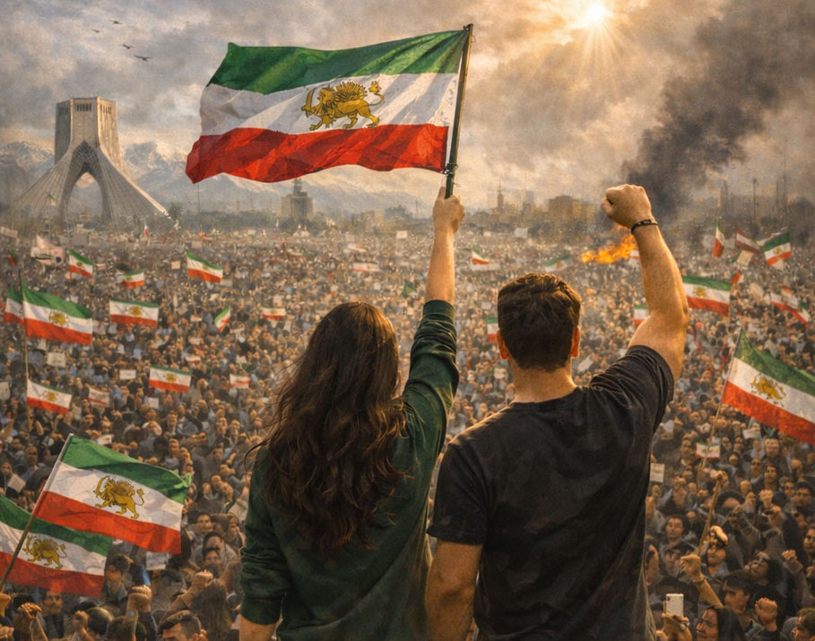
یکی از زیانبارترین خطاها در نگاه واشنگتن به ایران، ناتوانی در تمایز قائل شدن میان سه مفهوم متفاوت است: ایران بهعنوان یک تمدن، ایران بهعنوان یک جامعه، و جمهوری اسلامی بهعنوان نظام حاکم. این سه یک چیز نیستند، و هر تلاشی برای فهم ایران باید از همین نقطه آغاز شود.
بسیاری از سیاستگذاران غربی، آگاهانه یا ناآگاهانه، چنان سخن میگویند که گویی جمهوری اسلامی بازتاب طبیعی خواست سیاسی و فرهنگی جامعه ایران است. حتی برخی از منتقدان رژیم نیز، بیآنکه متوجه باشند، همین پیشفرض را پذیرفتهاند؛ آنان ممکن است جمهوری اسلامی را نظامی سرکوبگر، اقتدارگرا و خشن بدانند، اما همچنان تصور کنند که این حکومت تجلی جامعهای ذاتاً مذهبی، محافظهکار و ضدغربی است، جامعهای که ارزشهایش با ارزشهای حاکمان همسو است. این برداشت بهشدت گمراهکننده است.
جمهوری اسلامی نه به این دلیل که نماینده واقعی جامعه ایران است، بلکه به این دلیل که انحصار ابزارهای زور را در اختیار دارد، بر سر کار مانده است. درک همین تفاوت برای فهم هم رژیم و هم مردمی که زیر سلطه آن زندگی میکنند، اهمیت بنیادین دارد.
بسیاری از ناظران غربی، بهویژه آنان که شناخت عمیقی از ایران معاصر ندارند، همچنان ایران را با جمهوری اسلامی یکی میپندارند؛ در ذهن آنان، واژههایی مانند «ایران»، «تشیع»، «حکومت روحانیان»، «محافظهکاری مذهبی» و «ضدیت با آمریکا» بهتدریج در یک تصویر واحد ادغام میشود. هنگامی که این همپوشانی ذهنی شکل بگیرد، تحلیل سیاسی نیز ناگزیر دچار انحراف خواهد شد.
این سوءبرداشت هم در میان چپ دیده میشود و هم در میان راست، هرچند به دلایل متفاوت. بخشی از جریانهای چپ جمهوری اسلامی را عمدتاً از دریچه مبارزه با امپریالیسم میبینند و در نتیجه سهم سیاستهای آمریکا را در شکلگیری تنشهای منطقهای بیش از اندازه برجسته میکنند. در سوی دیگر، برخی محافظهکاران مذهبی، بهویژه کسانی که با واقعیت جامعه ایران آشنایی چندانی ندارند، چون رژیم از زبان دین سخن میگوید، بر خانواده تأکید میکند و با لیبرالیسم سکولار مخالفت میورزد، گمان میکنند با نوعی نظم اجتماعی سنتی و اصیل روبهرو هستند. هر دو برداشت از واقعیت فاصله دارند.
زبان دینی جمهوری اسلامی را نباید با مشروعیت اجتماعی آن اشتباه گرفت. این نظام بیان سیاسی اکثریتی مشتاق حکومت روحانیان نیست؛ حقیقت درست برعکس است. یکی از واقعیتهایی که در واشنگتن کمتر دیده میشود این است که جامعه امروز ایران از ضدروحانیترین جوامع خاورمیانه به شمار میآید. این گزاره شاید برای بسیاری از ناظران خارجی شگفتآور باشد، اما نباید چنین باشد.
نزدیک به نیمقرن حکومت روحانیان، نگاه جامعه ایران را به دین، اقتدار و قدرت سیاسی دگرگون کرده است. تجربه زیستن در سایه یک حکومت دینی، نه احترام عمومی به حاکمیت روحانیت را افزایش داده و نه اعتماد به آن را؛ حاصل این تجربه، بیش از هر چیز، فرسودگی، بدبینی، دلزدگی و ردِ مشروعیت آن بوده است. این یکی از بزرگترین تناقضهای تاریخی جمهوری اسلامی است: انقلابی که با شعار مشروعیت دینی به پیروزی رسید، در گذر زمان، یکی از گستردهترین واکنشهای ضدروحانیت را در سراسر منطقه پدید آورد.
درک این واقعیت برای فردی مانند جی. دی. ونس اهمیت ویژهای دارد، زیرا یکی از بزرگترین خطاهای تحلیلی درباره ایران این است که جمهوری اسلامی بازتاب جامعهای دانسته شود که همچون محافظهکاران مذهبی آمریکا، بر محور ایمان، سنت و نظم اخلاقی سازمان یافته است. واقعیت چنین نیست. بسیاری از آمریکاییهایی که برای دین در عرصه عمومی جایگاه مهمی قائلاند، ایمان را سرچشمه وجدان، تربیت اخلاقی، استحکام خانواده، اعتماد اجتماعی و خودمهارگری میدانند؛ حتی اگر خواهان نقش پررنگتر دین در جامعه باشند، معمولاً آن را عاملی برای تعالی اخلاق عمومی تصور میکنند.
اما جمهوری اسلامی پدیدهای کاملاً متفاوت است. در این نظام، دین با اجبار، نظارت امنیتی، فساد و خشونت حکومتی درهم آمیخته است، و همین پیوند پیامدهایی ویرانگر به همراه داشته است. برای میلیونها ایرانی، دین دیگر پیش از آنکه تجربهای معنوی باشد، با گشت ارشاد، حجاب اجباری، سانسور، کنترل اجباری زندگی اجتماعی، آموزش ایدئولوژیک، ریاکاری رسمی و مجازات مخالفان شناخته میشود.
مسئله ایران نزاع انتزاعی میان «دین» و «سکولاریسم» نیست؛ مسئله، دینداریِ اجباری است که با زور حکومت تحمیل میشود. و همین تجربه، نگاه نسلهای امروز ایران را عمیقاً دگرگون کرده است.
بخش بزرگی از جامعه امروز ایران، از نظر سیاسی، گرایشی عمیق به سکولاریسم دارد؛ هرچند بسیاری از همین افراد همچنان از نظر فرهنگی مسلماناند، باورهای دینی خود را حفظ کردهاند یا به سنتهای مذهبی پایبند ماندهاند. شمار زیادی از کسانی که هنوز به خدا ایمان دارند، حکومت روحانیان را نمیپذیرند؛ بسیاری که برای سنتهای دینی ارزش قائلاند، با درآمیختن دین و دولت مخالفاند؛ حتی کسانی که هویت فرهنگی خود را با اسلام تعریف میکنند، دینداری اجباری را رد میکنند. این ظرافتها اغلب در دستهبندیهای سادهانگارانه غربی نادیده گرفته میشود.
جامعه ایران را نمیتوان با دوگانههایی مانند «مذهبی» یا «غیرمذهبی» توضیح داد. شکاف اصلی جای دیگری است: میان کسانی که کنترل ایدئولوژیکِ تحمیلشده از سوی حکومت را میپذیرند و کسانی که آن را رد میکنند. واقعیت این است که نیروی غالب در جامعه امروز ایران، بهروشنی در جهت رد این سلطه ایدئولوژیک حرکت میکند.
این واقعیت را میتوان در زندگی روزمره مردم نیز دید. پشت چهرهای که جمهوری اسلامی از ایران به نمایش میگذارد، جامعهای قرار دارد که بهطرزی چشمگیر مدرن، تحصیلکرده، آگاه از تحولات جهان، متصل به فضای دیجیتال، برخوردار از بلوغ فرهنگی و در برابر یکدستسازی ایدئولوژیک مقاوم است. نسل جوان ایران، بیش از هر گروه دیگری، تمام زندگی خود را زیر سایه سرکوب سیاسی، نابسامانی اقتصادی، سانسور و پلیس اخلاق گذرانده است؛ تجربهای که آنان را به نتیجهای روشن رسانده است: جمهوری اسلامی از آینده آنان محافظت نمیکند، آینده آنان را خفه میکند.
این واقعیت نسلی اهمیتی تعیینکننده دارد. نسل جوان ایران شور و شوق انقلاب را به ارث نبرده است، بلکه پیامدهای آن را به دوش میکشد؛ میراثی که به آنان رسیده، تورم، فساد، تحریم، سرکوب، ریاکاری نخبگان و بیصداقتی ساختاری است. آنان سالها دیدهاند که روحانیان از پاکدامنی و فضیلت سخن میگویند، در حالی که وابستگان به قدرت ثروت میاندوزند، فرزندان خود را به خارج از کشور میفرستند، داراییهای خارجی دارند و از سبک زندگیای برخوردارند که برای شهروندان عادی دستنیافتنی است.
همین ریاکاری ضربهای ویرانگر به مشروعیت سیاسی رژیم وارد کرده است. هیچ چیز به اندازه ریاکاری آشکار، مشروعیت یک ایدئولوژی را از میان نمیبرد؛ این نیز از همان نکاتی است که ونس باید بهخوبی درک کند، زیرا نقد نخبگانی که مردم را به فداکاری دعوت میکنند اما خود را از پیامدهای آن مصون نگه میدارند، یکی از محورهای اصلی گفتمان سیاسی اوست. اگر این معیار را مبنا قرار دهیم، جمهوری اسلامی تقریباً مصداق کامل همان الگویی است که ونس بارها از آن انتقاد کرده است: رژیم از خانوادههای عادی میخواهد سختیهای اقتصادی را به نام آرمانهای انقلاب تحمل کنند، اما در همان حال، حلقههای نزدیک به قدرت از امتیازهای انحصاری، رانت، شبکههای فساد و حمایتهای اقتصادی بهرهمند میشوند. این نظم اخلاقی نیست؛ این بهرهکشی یک الیگارشی است که در پوشش زبان مقدس پنهان شده است.
جامعه ایران این واقعیت را بهخوبی میبیند. به همین دلیل، شعارهایی که در سالهای اخیر از دل اعتراضات مردمی برخاستهاند، تا این اندازه گویا و معنادارند. جنبشهای اعتراضی امروز ایران دیگر تنها سیاستهای مشخص حکومت را به چالش نمیکشند؛ مشروعیت ایدئولوژیک کل نظام روحانیت را زیر سؤال میبرند. آنچه امروز محل منازعه است، صرفاً شیوه حکومتداری نیست؛ اصل مشروعیت حکومت است. از همین رو، کشمکش امروز ایران را نمیتوان صرفاً نزاعی میان «اصلاحطلب» و «محافظهکار» توصیف کرد؛ این رویارویی، بیش از هر چیز، تقابل جامعه و رژیم است. رژیم، اسلحه، زندان، دستگاههای امنیتی و ابزارهای اجبار را در اختیار دارد. جامعه، مشروعیت را.
همینجاست که یکی از خطاهای مهم در سیاستگذاری غرب آشکار میشود. بسیاری از تحلیلگران بقای جمهوری اسلامی را با ثبات جامعه ایران یکسان میگیرند؛ حال آنکه این دو الزاماً یکی نیستند. جمهوری اسلامی اغلب بهعنوان سدی در برابر فروپاشی، تجزیه یا هرجومرج معرفی میشود، اما این نگاه یک واقعیت اساسی را نادیده میگیرد: بخش بزرگی از بیثباتی موجود، محصول عملکرد خود رژیم است. سرکوب، شکاف میان حکومت و مردم را عمیقتر میکند؛ فساد، ناامیدی اقتصادی را گسترش میدهد؛ جزماندیشی ایدئولوژیک، فاصله میان دولت و جامعه را هر روز بیشتر میکند. آنچه در نتیجه شکل گرفته، ثبات واقعی نیست؛ رکودی است که با زور حفظ شده است.
این تمایز برای جهانبینی جی. دی. ونس اهمیتی اساسی دارد، زیرا بزرگترین نگرانی او درباره ایران، فروغلتیدن کشور به هرجومرج است. آنچه او بیش از همه از آن هراس دارد، تکرار تجربه عراق است: فروپاشی دولت، تجزیه کشور، جنگ داخلی و گرفتار شدن دوباره آمریکا در بحرانی بیپایان. این نگرانی قابل درک است، اما اگر بر یک پیشفرض نادرست استوار باشد، خود میتواند به خطایی راهبردی تبدیل شود. آن پیشفرض نادرست این است که جمهوری اسلامی بازتاب طبیعی جامعه ایران است. چنین نیست.
ایران جامعهای نیست که ذاتاً بر محور حاکمیت روحانیت سازمان یافته باشد و با سقوط جمهوری اسلامی ناگزیر به فروپاشی تمدنی یا جنگ داخلی کشیده شود. ایران تمدنی کهن با هویتی ملی، انسجام فرهنگی، تداوم تاریخی و سرمایه انسانی چشمگیر است. جمهوری اسلامی این تمدن را نساخته است؛ تنها دستگاه حکومتی آن را در اختیار گرفته است. همین تمایز همهچیز را دگرگون میکند.
اگر این واقعیت را بپذیریم، دیگر نباید هر سخنی درباره تغییر رژیم را صرفاً از دریچه تجربه فروپاشی دولتهایی که در پی اشغال خارجی از هم پاشیدند، تحلیل کرد. پرسش مهمتر این است که آیا کنار رفتن جمهوری اسلامی میتواند نیروهای اجتماعی و سیاسیای را آزاد کند که سالهاست در بطن جامعه ایران وجود دارند، اما مجال ظهور نیافتهاند؟ شواهد بهروشنی چنین امکانی را تأیید میکنند.
در دل جامعه ایران، تقاضایی گسترده اما سرکوبشده برای زندگی عادی، حکومت پاسخگو، آزادیهای فردی، حکمرانی سکولار، فرصتهای اقتصادی، بازگشت به تعامل سازنده با جهان و زیستن با کرامت، بدون اجبار ایدئولوژیک، وجود دارد. البته این بدان معنا نیست که همه ایرانیان درباره آینده سیاسی کشور اتفاقنظر دارند؛ هیچ جامعه پویایی از چنین یکنواختی برخوردار نیست. اما انکار یک واقعیت روزبهروز دشوارتر میشود: ادعای جمهوری اسلامی مبنی بر نمایندگی اراده اخلاقی و فرهنگی مردم ایران، بهشدت تهی و بیاعتبار شده است.
شاید هیچ نکتهای به اندازه این واقعیت برای جی. دی. ونس اهمیت نداشته باشد: ایران، جمهوری اسلامی نیست. رژیم، ملت نیست. حکومت روحانیان، مردم ایران نیست. آنچه جمهوری اسلامی را بر سر پا نگه داشته، همسویی با ارزشهای جامعه نیست، بلکه انحصار ابزارهای خشونت و سرکوب است.
وقتی این تمایز روشن شود، کل بحث راهبردی نیز معنای دیگری پیدا میکند. در آن صورت، حمایت از مردم ایران دیگر به معنای ترویج سادهلوحانه دموکراسی یا آرمانگرایی لیبرال نخواهد بود؛ بلکه صرفاً به معنای پذیرفتن واقعیت اجتماعی ایران است. در این چارچوب، پرسش دیگر این نیست که آیا آمریکا باید نظم سیاسی تازهای بر ایران تحمیل کند یا نه؛ پرسش واقعی این است که آیا سیاست آمریکا باید همچنان رژیمی را نماینده اصلی جامعهای بداند که هر روز بیش از گذشته آن را پس میزند؟
این پرسشی کاملاً متفاوت است، و برای هر کسی که بخواهد بر نگاه ونس نسبت به ایران اثر بگذارد، شاید یکی از تعیینکنندهترین پرسشها باشد.
بدبینی ونس نسبت به تغییر رژیم، بیش از هر چیز، از ترس هرجومرج پس از فروپاشی سرچشمه میگیرد؛ اما این بدبینی، هنگامی رنگ میبازد که یک حقیقت بنیادین روشن شود: جمهوری اسلامی جامعهای را که خواهان حکومت روحانیان است، حفظ نکرده است، بلکه جامعهای را سرکوب میکند که روزبهروز بیشتر میخواهد از این نظام عبور کند. و این تفاوتی کوچک نیست؛ این تفاوت میان فروپاشی و رهایی است.
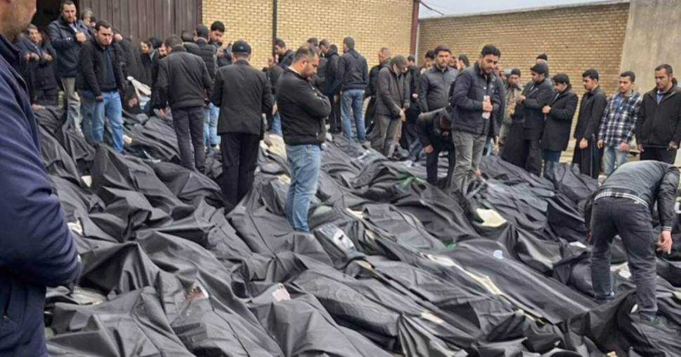
هر تلاش جدی برای اثرگذاری بر نگاه جی. دی. ونس نسبت به ایران، ناگزیر باید با یکی از بنیادیترین کاستیهای رویکرد واشنگتن به جمهوری اسلامی روبهرو شود: این پیشفرض که حکومت مستقر در تهران، نماینده مشروع و قانونی ملت ایران است. این تصور چنان در ذهن بسیاری از دیپلماتها و سیاستگذاران جا افتاده که کمتر کسی آن را به پرسش میکشد؛ اما دقیقاً همین پیشفرض باید مورد بازنگری قرار گیرد، زیرا بخش بزرگی از سردرگمی راهبردی غرب درباره ایران از همین نقطه آغاز میشود.
نخستین خطایی که بسیاری از سیاستگذاران غربی مرتکب میشوند، این است که جمهوری اسلامی را صرفاً «دولت ایران» در معنای متعارف یک دولت-ملت میپندارند؛ گویی با حکومتی روبهرو هستند که تنها بر سر موضوعاتی مانند برنامه هستهای، امنیت منطقهای یا بازدارندگی نظامی با ایالات متحده اختلافنظر دارد. این تصویر بهشدت گمراهکننده است.
جمهوری اسلامی صرفاً دولتی نیست که سیاستهایش با مخالفت بخشی از مردم روبهرو باشد؛ این نظام ساختاری ایدئولوژیک است که کنترل یکی از کهنترین تمدنهای جهان را به دست گرفت و نزدیک به نیمقرن است که قدرت خود را، نه بر پایه رضایت عمومی، بلکه عمدتاً از طریق سرکوب، ارعاب، خشونت سازمانیافته و انحصار ابزارهای قهر حفظ کرده است. این تمایز اهمیت اساسی دارد: کنترل با مشروعیت یکسان نیست.
ممکن است یک رژیم بر سراسر قلمرو کشور مسلط باشد، نیروهای مسلح را فرماندهی کند، سفارتخانه اداره کند، گذرنامه صادر کند و کرسی ایران را در سازمان ملل در اختیار داشته باشد؛ اما هیچیک از اینها، بهتنهایی مشروعیت سیاسی ایجاد نمیکند. مشروعیت به چیزی عمیقتر نیاز دارد: رضایت معنادار شهروندان و ادعایی معتبر مبنی بر نمایندگی اراده سیاسی ملت. جمهوری اسلامی امروز، اولی را در اختیار دارد؛ کنترل. اما دومی را، روزبهروز بیشتر از دست داده است؛ مشروعیت.
همین واقعیتی است که بسیاری از مخالفان جمهوری اسلامی، فعالان مدنی و ایرانیان خارج از کشور سالهاست میکوشند به جهان غرب منتقل کنند. مسئله فقط این نیست که این رژیم اقتدارگرا، فاسد یا سرکوبگر است، هرچند همه این توصیفها درستاند؛ مسئله بنیادیتر آن است که نماینده واقعی ایران نیست.
جمهوری اسلامی خود را در برابر جهان، صدای رسمی ملت ایران معرفی میکند؛ به نام ایران سخن میگوید، به نام ایران مذاکره میکند، مدعی دفاع از تمدن ایران، عزت ایران و استقلال ایران است. اما برای بخش بزرگی از مردم ایران، این ادعا چیزی جز یک جعل سیاسی نیست. بقای این نظام بر حمایت گسترده مردمی استوار نیست، بلکه بر نهادهای سرکوب تکیه دارد، بهویژه دستگاههای امنیتی، شبکههای اطلاعاتی و سپاه پاسداران انقلاب اسلامی که در کنار یکدیگر اطاعت را تحمیل و هر صدای مخالفی را سرکوب میکنند.
در همین نقطه است که بسیاری از تحلیلهای غربی به شکلی خطرناک از واقعیت فاصله میگیرند: آنان از «ایران» سخن میگویند، در حالی که در عمل منظورشان دستگاه حاکم جمهوری اسلامی است. همین میانبُر زبانی به نابینایی راهبردی میانجامد؛ در نتیجه، مرز میان کشور و اشغالکننده، ملت و رژیم، مردم و زندانبان از میان میرود.
ایران تمدنی چند هزار ساله و ملتی با هویتی تاریخی است که هزارهها پیش از تولد جمهوری اسلامی وجود داشته است؛ اما جمهور اسلامی نظامی انقلابی است که تنها حدود نیمقرن پیش بر این تمدن تحمیل شد. یکی دانستن این دو، به معنای بدفهمی کل مسئله ایران است.
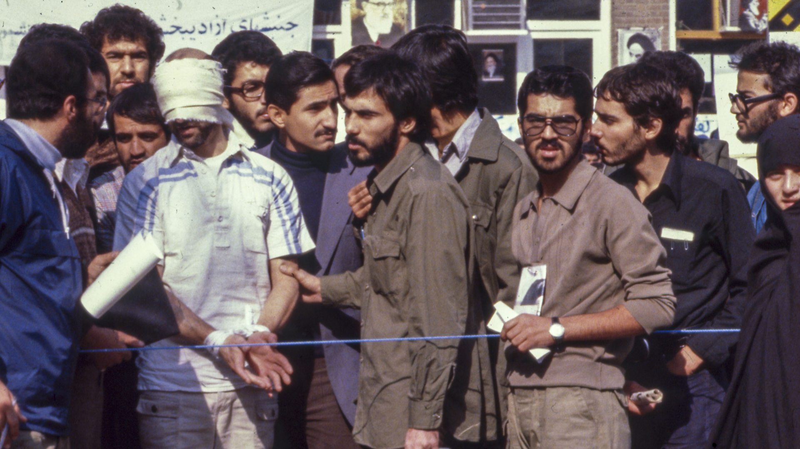
برای درک بهتر این موضوع، شاید یک تشبیه روشنتر از رقابت معمول میان دولتها وجود داشته باشد: گروگانگیری. فرض کنید گروهی از افراد مسلح به یک بانک حمله میکنند؛ نگهبانان را میکشند، ساختمان را تصرف میکنند، اسلحه را بر سر کارمندان و مشتریان میگذارند، همه راههای ارتباطی را قطع میکنند و سپس به جهان خارج اعلام میکنند که از این پس سخنگوی رسمی آن بانک هستند. آنان اصرار میکنند که هرگونه مذاکره باید فقط با آنها انجام شود، زیرا کنترل ساختمان را در اختیار دارند.
اکنون فرض کنید نیروهای پلیس به محل میرسند. آیا هیچ مذاکرهکننده عاقلی صرفاً به این دلیل که گروگانگیران ساختمان را در اختیار گرفتهاند، آنها را مدیریت قانونی بانک خواهد دانست؟ بدیهی است که نه. ممکن است پلیس برای کاهش خطر، خریدن زمان، فریب دادن مهاجمان یا حفظ جان گروگانها وارد مذاکره شود، اما این گفتوگوها هرگز به معنای بهرسمیت شناختن اخلاقی یا سیاسی گروگانگیران نیست؛ هدف همچنان روشن است: پایان دادن به گروگانگیری، حفاظت از بیگناهان و خنثی کردن گروگانگیران.
این تشبیه یکی از مهمترین ویژگیهای جمهوری اسلامی را آشکار میکند: این رژیم یک ملت را به گروگان گرفته است. در چهار دهه گذشته، مخالفان خود را اعدام کرده، اندیشمندان را به زندان افکنده، فعالان مدنی را شکنجه کرده، روزنامهنگاران را خاموش ساخته، اعتراضات مردمی را سرکوب کرده و با تکیه بر ترس و ارعاب، قدرت خود را حفظ کرده است. این نظام بارها نشان داده که هرگاه میان حفظ ایران و حفظ خود ناچار به انتخاب شود، بقای خود را برمیگزیند؛ اگر ادامه حیاتش اقتضا کند، مردم را فقیرتر میکند، کشور را در انزوای بینالمللی فرو میبرد و رفاه و آینده ملی را قربانی میسازد.
به همین دلیل است که هرگونه مذاکره با جمهوری اسلامی، پیش از هر چیز، به شفافیت مفهومی نیاز دارد. ممکن است دیپلماسی در مقاطعی ضرورتی تاکتیکی باشد، اما دیپلماسی هرگز نباید به تسلیم ذهنی در برابر رژیم تبدیل شود.
در همین نقطه است که نقد نگاه ونس نیز دقیقتر و جدیتر میشود. واقعگرایی سیاسی او پرسشهایی کاملاً طبیعی مطرح میکند: آیا میتوان جمهوری اسلامی را بازداشت؟ آیا میتوان با اعمال فشار، رفتار آن را مهار کرد؟ آیا میتوان از راه مذاکره به نوعی تعادل پایدار رسید؟ و آیا میتوان بدون توسل به جنگ، از منافع آمریکا حفاظت کرد؟ همه اینها پرسشهایی مشروع و معقولاند، اما شاید بر پیشفرضی استوار باشند که کمتر کسی آن را به چالش میکشد: اینکه بقای بلندمدت جمهوری اسلامی امری مفروض و تغییرناپذیر است. دقیقاً همین پیشفرض باید مورد بازنگری قرار گیرد.
پرسش اساسی نباید این باشد که چگونه میتوان جمهوری اسلامی را برای همیشه بهعنوان یکی از اجزای ثابت نظم منطقه مدیریت کرد؛ پرسش واقعی این است: آیا حفظ چنین رژیمی اساساً در راستای منافع ایالات متحده هست یا نه؟
بخش بزرگی از سیاست واشنگتن در چند دهه گذشته، بر این تصور استوار بوده که بقای جمهوری اسلامی با ثبات منطقه مترادف است؛ همین فرض بر دیپلماسی، سیاست تحریمها و شیوه مدیریت بحران سایه انداخته است. منطق این نگاه ساده است: هرچند جمهوری اسلامی رژیمی ناخوشایند است، اما فروپاشی آن شاید هرجومرج به بار آورد، پس وجود رژیمی خصمانه اما باثبات، بهتر از بیثباتی است. در نگاه نخست، این استدلال محتاطانه و معقول به نظر میرسد؛ اما در واقع، بر خطایی عمیق بنا شده است. این نگاه یک فرض نادرست را بدیهی میانگارد: اینکه جمهوری اسلامی خود عامل ثبات است. حال آنکه واقعیت درست برعکس است.
جمهوری اسلامی یکی از مهمترین سرچشمههای بیثباتی در خاورمیانه است؛ راهبرد منطقهای آن بر جنگهای نیابتی، شبکههای تروریستی، افراطگرایی ایدئولوژیک، گروگانگیری دیپلماتیک، باجگیری هستهای و تشدید تنش از طریق جنگ نامتقارن استوار است. این رژیم حافظ نظم نیست؛ تولیدکننده بحران است. از همین رو، ثبات منطقه را نمیتوان با بقای جمهوری اسلامی یکی دانست؛ در بسیاری از موارد، ادامه حیات همین رژیم، خود منشأ تداوم بیثباتی است.
اینجاست که بسیاری از ایرانیان از رویکرد دولتهای غربی احساس سرخوردگی عمیقی میکنند. آنان میبینند که قدرتهای خارجی با جمهوری اسلامی چنان مذاکره میکنند که گویی با یک دولت مشروع، هرچند دشوار، روبهرو هستند؛ دیپلماتها از کاهش تنش، اعتمادسازی و خویشتنداری متقابل سخن میگویند. اما از نگاه بسیاری از ایرانیان، این وضعیت بیش از هر چیز به آن میماند که کسی درباره مدیریت بلندمدت یک گروگانگیری مذاکره کند، در حالی که گروگانگیران را مدیران قانونی محل حادثه فرض گرفته باشد. این سرخوردگی صرفاً احساسی نیست؛ ریشهای راهبردی دارد.
هر مذاکرهای که جمهوری اسلامی را نماینده بیچونوچرای ایران فرض کند، چیزی بسیار ارزشمند در اختیار آن میگذارد: مشروعیت. و مشروعیت یکی از ارزشمندترین سرمایههایی است که جمهوری اسلامی همواره میکوشد از جهان خارج به دست آورد. جمهوری اسلامی تنها به دنبال کاهش تحریمها یا ایجاد گشایشی موقت در اقتصاد نیست؛ این رژیم، بیش از هر چیز، به دنبال بهرسمیت شناخته شدن است. میخواهد قدرتهای بزرگ، هرچند بهطور ضمنی، ماندگاری و مشروعیت آن را بپذیرند؛ میخواهد این تصور در ذهن جهان تثبیت شود که ایران همان جمهوری اسلامی است و هیچ ایران دیگری بیرون از این نظام وجود ندارد. اما این روایت حقیقت ندارد.
ایران فراتر از جمهوری اسلامی است. ملت ایران بسیار بزرگتر، کهنتر، ریشهدارتر و ماندگارتر از نظام روحانیتی است که امروز بر آن حکومت میکند. میلیونها ایرانی دین اجباری را رد میکنند، حاکمیت روحانیان را نمیپذیرند، با حکومت ایدئولوژیک مخالفاند، و هویت انقلابیای را که جمهوری اسلامی برای کشور تعریف کرده، از آنِ خود نمیدانند. اگر این رژیم همچنان بر سر کار مانده، نه به این دلیل است که تجسم اراده واقعی جامعه ایران است، بلکه به این دلیل که انحصار ابزارهای زور را در اختیار دارد.
همین تمایز باید به یکی از ارکان هر سیاست جدی در قبال ایران تبدیل شود. غرب باید از این چارچوب ذهنی فاصله بگیرد که گویی تنها دو گزینه پیش رو دارد: یا جنگ با ایران، یا سازش با جمهوری اسلامی. این یک دوگانه کاذب است، زیرا مهمترین بازیگر این معادله را بهکلی نادیده میگیرد: مردم ایران.
وقتی این بازیگر دوباره به متن تحلیل بازگردد، تصویر راهبردی نیز دگرگون میشود. در آن صورت، دیگر پرسش این نخواهد بود که آیا آمریکا باید یک نظم سیاسی مستقر را حفظ کند یا آن را از میان ببرد؛ پرسش واقعی این است: سیاست آمریکا در عمل به سود چه کسی تمام میشود؟ گروگانگیران، یا ملتِ به گروگان گرفتهشده؟
همین استدلال است که باید برای جی. دی. ونس بیشترین قدرت اقناع را داشته باشد. ونس بهخوبی میداند خیانت نخبگان به مردم عادی چگونه رخ میدهد؛ او سازوکار نظامهایی را میشناسد که مدعی حمایت از مردماند، اما در عمل از آنان بهرهکشی میکنند. او فساد اخلاقی طبقهای حاکم را درک میکند که از فضیلت سخن میگوید، اما بقای خود را با اجبار، رانت و حفظ منافع خویش تضمین میکند. جمهوری اسلامی تقریباً نمونه کامل همین الگوست.
این نظام طبقهای روحانی را بر رأس قدرت نشانده که به زبان ایمان سخن میگوید، اما با ترس حکومت میکند. از خدا سخن میگوید، اما سرکوب را نهادینه میکند. مدعی اقتدار اخلاقی است، اما حلقههای نزدیک به قدرت را ثروتمندتر میکند و زندگی خانوادههای عادی را زیر فشار، فقر و خشونت خرد میسازد. چنین نظامی حاکمیتی مشروع نیست؛ این یک گروگانگیری سازمانیافته در مقیاس یک کشور است.
و تا زمانی که این تمایز به جایگاهی محوری در اندیشه سیاستگذاران غربی پیدا نکند، همان خطا بارها تکرار خواهد شد: مذاکره با زندانبان، در حالی که زندانیان به فراموشی سپرده شدهاند. شاید هیچ سوءبرداشتی در تمام سیاست غرب درباره ایران، پیامدهایی عمیقتر از این نداشته باشد.
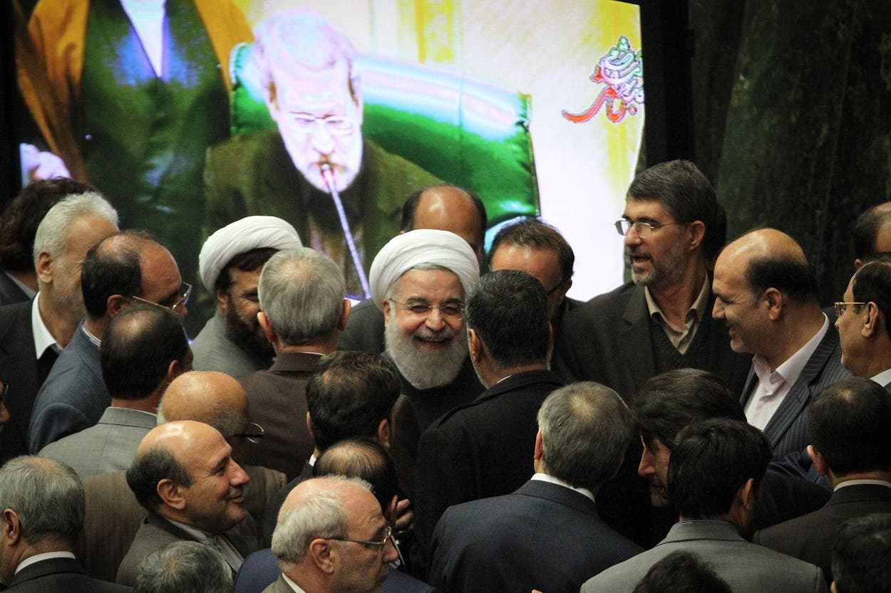
هر تلاشی برای شناخت واقعی جمهوری اسلامی، ناگزیر باید از چارچوب متعارف دیپلماسی، تحریم و سیاست خارجی فراتر برود. بسیاری از سیاستگذاران غربی هنوز این نظام را صرفاً یک دولت اقتدارگرا میبینند که مانند سایر حکومتها، منافع امنیتی و راهبردی خود را از مسیرهای معمول حکمرانی دنبال میکند. اما این تصویر کامل نیست. جمهوری اسلامی فقط یک حکومت دینی نیست؛ فقط یک دیکتاتوری هم نیست. واقعیتی وجود دارد که هنوز بسیاری از تحلیلگران غربی از بیان صریح آن پرهیز میکنند: جمهوری اسلامی، در عین حال، یک شبکه پیچیده و فراملیِ سازمانیافته با ماهیتی مجرمانه است.
این تمایز صرفاً یک بحث نظری نیست؛ درک ما را از رفتار رژیم، توان ماندگاری آن و انگیزههای واقعیاش بهطور اساسی دگرگون میکند. بخش بزرگی از سیاستگذاران واشنگتن تصور میکنند فشار اقتصادی بر پایه منطقی نسبتاً ساده عمل میکند: تحریمها درآمد حکومت را کاهش میدهد، منابع مالی دولت را محدود میکند و در نهایت رژیم را تضعیف خواهد کرد. این منطق زمانی کارآمد است که با دولتی روبهرو باشیم که اقتصادش مانند یک اقتصاد ملیِ متعارف عمل میکند؛ یعنی جایی که فشار اقتصادی به فشار سیاسی تبدیل میشود و فشار سیاسی، سرانجام حکومت را به تغییر رفتار وامیدارد. اما جمهوری اسلامی چنین ساختاری ندارد.
اقتصاد این نظام بر شبکههای فساد، پنهانکاری، رانت، تأمین مالی غیرقانونی و انحصار کارتلگونه بر بخشهای راهبردی اقتصاد بنا شده است. در چنین ساختاری، تحریمها فقط منابع مالی رژیم را محدود نمیکنند؛ در بسیاری از موارد، اقتصاد را به عرصهای سودآورتر برای نزدیکان قدرت تبدیل میکنند. این یکی از بدفهمیهای اساسی درباره جمهوری اسلامی است.
بیتردید تحریمها به اقتصاد ایران آسیب میزنند: طبقه متوسط را فرسوده میکنند، بخش خصوصی را تضعیف میکنند، قدرت خرید مردم را کاهش میدهند، پساندازها را از میان میبرند و خروج سرمایه را شتاب میبخشند؛ هزینه این وضعیت را پیش از همه مردم عادی ایران میپردازند. اما این تصور که چنین فشاری بهطور خودکار نخبگان حاکم را نیز تضعیف میکند، اغلب نادرست است. در یک اقتصاد سیاسیِ آلوده به فساد، کمیابی خود به منبع سود تبدیل میشود. هرچه مسیرهای رسمی بانکی بستهتر شوند، ارزش کانالهای غیررسمی بیشتر میشود؛ هرچه تجارت قانونی محدودتر شود، قاچاق سودآورتر میشود؛ هرچه شفافیت کاهش یابد، فرصتهای سودجویی و واسطهگری گسترش پیدا میکند؛ و هرچه تجارت قانونی دشوارتر شود، کسانی که به مسیرهای بازار سیاه دسترسی دارند، قدرت بیشتری به دست میآورند.
اما این مسیرها در اختیار چه کسانی است؟ نه مردم عادی. کنترل این شبکهها عمدتاً در دست مجموعههایی است که بهطور مستقیم یا غیرمستقیم با سپاه پاسداران انقلاب اسلامی و امپراتوری گسترده اقتصادی آن پیوند دارند. در همینجا یکی از بزرگترین تناقضهایی آشکار میشود که بسیاری از سیاستگذاران غربی هنوز آن را بهدرستی درک نکردهاند: تحریمها میتوانند همزمان جامعه را فقیرتر و سوداگرترین بخشهای رژیم را ثروتمندتر کنند.
جمهوری اسلامی طی دههها زندگی زیر فشار تحریم، خود را با این شرایط تطبیق داده است؛ این نظام تنها برای بقا در دوران تحریم سازوکارهای موازی ایجاد نکرده، بلکه یاد گرفته است از خودِ تحریم سود ببرد. برای دور زدن تحریمها، شبکهای گسترده از شرکتهای پوششی، مؤسسات صوری، نظامهای غیررسمی انتقال پول، ناوگان پنهان حملونقل، مسیرهای جعلی جابهجایی کالا و شبکههای منطقهای پولشویی ایجاد شده است. نفت از مسیرهای غیرشفاف فروخته میشود؛ کشتیها پرچم خود را تغییر میدهند؛ سامانههای ردیابی خاموش میشوند؛ محمولهها از طریق واسطههای متعدد جابهجا میشوند؛ و گردش مالی از لایههای پیچیدهای از واسطهها عبور میکند تا منشأ واقعی پول و مالکیت آن پنهان بماند.
این رفتارها واکنشهای مقطعی و اضطراری نیستند؛ به بخشی از ساختار دائمی نظام تبدیل شدهاند. برای جمهوری اسلامی، دور زدن تحریمها دیگر یک راهحل موقت نیست، بلکه بخشی از معماری اقتصادی و عملیاتی رژیم است. و دقیقاً همین واقعیت توضیح میدهد که چرا فشار اقتصادی بارها نتوانسته به نتایجی منجر شود که بسیاری در غرب انتظارش را داشتند.
جمهوری اسلامی عملاً تحریم را به یک صنعت تبدیل کرده است. در سایه بازارهای محدود و بسته، طبقهای از ذینفعان شکل گرفته که از تداوم این وضعیت سود میبرند: هرچه ایران منزویتر باشد، ارزش ارتباط با مراکز قدرت بیشتر میشود؛ دسترسی به مجوزها، امتیازها و کانالهای واردات، خود به سرمایه تبدیل میشود؛ اختلاف نرخ ارز به منبع رانت بدل میشود؛ قاچاق سودآورتر میشود؛ و کمیابی، انحصار میآفریند و انحصار، سودهای کلانی را نصیب بازیگران نزدیک به قدرت میکند.
از همین رو، فساد در جمهوری اسلامی را نباید صرفاً یک ضعف اخلاقی یا ناکارآمدی اداری دانست؛ فساد بخشی از شیوه حکمرانی این نظام است. این یکی از مهمترین سازوکارهایی است که رژیم از طریق آن وفاداری میخرد و بقای خود را تضمین میکند. جمهوری اسلامی تنها با ایدئولوژی به اطرافیان خود پاداش نمیدهد؛ با امتیازات اقتصادی نیز آنان را به خود وابسته میسازد. وفاداری سیاسی، دسترسی به کانالهای تجاری انحصاری را به همراه دارد؛ نهادهای امنیتی به امپراتوریهای اقتصادی تبدیل میشوند؛ قدرت نظامی با قدرت اقتصادی درهم میآمیزد؛ اقتدار روحانیت با شبکههای مالی و رانتخواری گره میخورد. در نتیجه، ایدئولوژی و فساد یکدیگر را تقویت میکنند.
دقیقاً به همین دلیل است که بحثهای سادهانگارانه درباره تحریمها میتواند بهشدت گمراهکننده باشد. هرگاه تحلیلگری در غرب میگوید «باید تحریمها را تشدید کرد»، پرسش اصلی این نیست که آیا فشار اقتصادی بیشتر میشود یا نه؛ پرسش اساسی این است: چه کسی هزینه این فشار را میپردازد و چه کسی از آن سود میبرد؟ و پاسخ، در بسیاری از موارد، به شکلی تلخ و وارونه است: مردم عادی هزینه را میپردازند، نزدیکان رژیم سود آن را میبرند.
همین سازوکار توضیح میدهد که چرا جمهوری اسلامی اغلب بسیار مقاومتر از آن چیزی به نظر میرسد که بسیاری از ناظران انتظار دارند. بقای این نظام به وجود یک اقتصاد سالم و پویا وابسته نیست؛ آنچه بقای آن را تضمین میکند، کنترل گلوگاههای یک اقتصاد بیمار و تحریفشده است. و هرچه شرایط زندگی برای مردم دشوارتر شود، بخشهای بیشتری از اقتصاد ناچار میشوند برای ادامه فعالیت، به شبکههایی وابسته شوند که رژیم بر آنها تسلط دارد.
اما این ساختار اقتصادِ مجرمانه به مرزهای ایران محدود نمیشود؛ حیات جمهوری اسلامی بیش از پیش به شبکهای فراملی از واسطهها، دلالان، تسهیلکنندگان و شرکای منطقهای وابسته شده است. پولشویی، دور زدن تحریمها، لجستیک پنهان و انتقال سرمایه از مسیرهای مالی برونمرزی، فعالیتهایی حاشیهای نیستند؛ اینها در قلب سازوکار بقای رژیم قرار دارند. و درست در همین نقطه است که تحلیل، برای بسیاری از سیاستگذاران غربی ناخوشایندتر میشود: جمهوری اسلامی این اقتصاد مجرمانه را بهتنهایی اداره نمیکند؛ در خارج از ایران نیز کسانی از آن سود میبرند.
شرکتهای واسطه، دلالان، بنگاههای پوششی و بازیگران منطقهای، همگی میتوانند از ادامه حیات رژیمی که هم تحت تحریم است و هم همچنان پابرجا مانده، منافع اقتصادی قابلتوجهی کسب کنند. اگر ایران روزی به کشوری عادی، شفاف، سکولار و درهمتنیده با اقتصاد جهانی تبدیل شود، بسیاری از این شبکهها منافع خود را از دست خواهند داد؛ چنین تحولی نیاز به واسطههای پنهان را از میان میبرد و ساختارهای رانتیای را که بر پایه انزوا شکل گرفتهاند، برهم میزند.
این بدان معناست که همه کسانی که در روند دیپلماسی حضور دارند، الزاماً انگیزههای یکسانی ندارند. برخی واقعاً خواهان حل بحراناند؛ اما برخی دیگر، هرچند در ظاهر از کاهش تنش سخن میگویند، در عمل از تداوم یک بحرانِ کنترلشده سود میبرند. رژیمی که هم تحریم شده و هم همچنان پابرجاست، فرصتهای پرسودی در حوزههایی مانند میانجیگری، دلالی، حملونقل، واسطهگری مالی و شبکههای غیرقانونی ایجاد میکند. به همین دلیل، یکی از خطرناکترین خطاهای تحلیلی این است که تصور کنیم همه میانجیها بیطرفاند: برخی از حل بحران سود میبرند، برخی دیگر از ادامه بیثباتیِ مدیریتشده. و این تفاوت اهمیت راهبردی بسیار بزرگی دارد.
در همینجاست که یکی از ویژگیهای فکری جی. دی. ونس میتواند به نقطهای مؤثر برای اقناع او تبدیل شود. ونس نسبت به نظامهایی که در آنها نخبگان حاکم، در حالی که خود را صاحب فضیلت و مشروعیت اخلاقی معرفی میکنند، از مردم عادی بهرهکشی میکنند، حساسیت ویژهای دارد؛ او ساختارهای غارتگر را بهخوبی میشناسد، ساختارهایی که به نام عدالت و ارزشهای اخلاقی سخن میگویند، اما در عمل ثروت و قدرت را به سود حلقهای محدود از صاحبان نفوذ مصادره میکنند. او همچنین نسبت به نهادهایی بدبین است که شعارهای عمومیشان پوششی برای منافع خصوصی و فساد سازمانیافته است.
جمهوری اسلامی، با دقتی کامل، در همین چارچوب جای میگیرد. این رژیم خود را مدافع عدالت، ایمان، کرامت در برابر سلطه خارجی و مبارزه با فساد معرفی میکند؛ اما در پس این شعارها، یکی از فاسدترین ساختارهای حکمرانی خاورمیانه قرار دارد. در این نظام، مشروعیت ایدئولوژیک، در بسیاری از موارد، پوششی برای شبکههای گسترده رانت، توزیع امتیازات، فساد سازمانیافته و انتقال ثروت به حلقههای نزدیک به قدرت است.
دقیقاً همین نکتهای است که ونس باید بهروشنی درک کند: جمهوری اسلامی صرفاً دولتی نیست که برای دریافت تضمینهای امنیتی پای میز مذاکره میآید؛ این رژیمی است که بقای آن بیش از هر زمان دیگری به فساد وابسته شده است. نه فسادی که پیامد ناخواسته حکومت باشد، بلکه فساد، خودِ سازوکار حکومت است.
و همین واقعیت منطق دیپلماسی را نیز تغییر میدهد. در مواجهه با یک دولت متعارف، گاهی میتوان با ایجاد مشوقهای اقتصادی محاسبات راهبردی آن را تغییر داد؛ اما هنگامی که یک رژیم از خودِ بحران سود میبرد، سازوکار انگیزهها کاملاً دگرگون میشود. بحران میتواند به اهرم قدرت تبدیل شود؛ انزوا میتواند رانت بیافریند؛ تحریمها میتوانند حلقههای نزدیک به قدرت را ثروتمندتر کنند؛ مذاکرات میتوانند برای رژیم زمان بخرند؛ و خودِ بحران به یک منبع درآمد بدل شود.
در چنین ساختاری، طبیعی است که رژیم انگیزه چندانی برای عادیسازی واقعی روابط نداشته باشد: وقتی ابهام و پنهانکاری سودآور است، چرا باید شفافیت را بپذیرد؟ وقتی شبکههای غیرقانونی ثروت نخبگان حاکم را تأمین میکنند، چرا باید آنها را برچیند؟ وقتی شفافیت نظام رانت و امتیازات انحصاری را تهدید میکند، چرا باید از آن استقبال کند؟ همین پرسشها نشان میدهد که چرا تلاشهای متعارف برای رسیدن به توافق، بارها با شکست یا ناامیدی روبهرو شدهاند. مانع اصلی فقط سرسختی ایدئولوژیک رژیم نیست، هرچند ایدئولوژی نقشی اساسی دارد؛ مانع دیگر، منافع اقتصادیای است که در ساختار بقای رژیم نهادینه شده است. از رژیمی که از نابسامانی سود میبرد، نمیتوان انتظار داشت مانند یک دولت عادی، در پی عادیسازی روابط باشد.
این واقعیت پیامدهای مهمی برای سیاستگذاری دارد. هدف نباید صرفاً افزایش فشار اقتصادی بهصورت کلی باشد؛ فشارهای گسترده، اگر هوشمندانه طراحی نشوند، ممکن است همان سازوکارهای معیوبی را تشدید کنند که سوداگرترین شبکههای رژیم از آنها تغذیه میکنند. راهبردی کارآمدتر باید مستقیماً معماری اقتصادِ فساد را هدف قرار دهد؛ این یعنی تمرکز صرف بر تحریمها کافی نیست. باید شبکههای پولشویی، مسیرهای دور زدن تحریم، شرکتهای پوششی، پنهانسازی مالکیت واقعی داراییها، داراییهای برونمرزی و همچنین افراد و نهادهای خارجیِ تسهیلکننده این فعالیتها، بهطور هدفمند تحت فشار قرار گیرند. هدف باید ماشین فساد باشد؛ فشار باید متوجه اکوسیستم اقتصادیِ مجرمانه رژیم شود، نه آنکه بار اصلی آن بر دوش مردم ایران بیفتد.
این صرفاً یک اصلاح فنی در سیاست تحریمها نیست؛ این تغییری در شیوه فهم جمهوری اسلامی است. برای تدوین سیاستی واقعبینانه، دیگر نمیتوان جمهوری اسلامی را فقط یک دولت انقلابی یا صرفاً یک حکومت دینی دانست؛ باید آن را یک شبکه سازمانیافته مجرمانه نیز دید، ساختاری که مدل اقتصادی آن بر اجبار، پنهانکاری، فساد و انحصار استوار است. تا زمانی که سیاستگذاران غربی این واقعیت را بهطور کامل درک نکنند، همچنان در فهم علت ماندگاری جمهوری اسلامی دچار خطا خواهند شد و بارها خواهند پرسید چرا بسیاری از ابزارهای سنتی دیپلماسی، آنگونه که انتظار میرود، کارآمد نیستند.
جمهوری اسلامی فقط یاد نگرفته است که در شرایط بحران زنده بماند؛ آموخته است که از بحران، ثروت تولید کند. و شاید هیچ حقیقتی، بیش از این، راز ماندگاری این رژیم را توضیح ندهد.
یکی از ماندگارترین سوءبرداشتها در دیپلماسی غرب درباره ایران، این تصور است که همه میانجیهای حاضر در مذاکرات، بازیگرانی ذاتاً بیطرفاند که صرفاً برای کاهش تنش و حفظ ثبات منطقه تلاش میکنند. این فرض معمولاً بدون چونوچرا پذیرفته میشود، زیرا خودِ مفهوم «میانجیگری» بار معنایی مثبتی دارد؛ این واژه بیطرفی، تعادل و تلاشی صادقانه برای پایان دادن به منازعه را تداعی میکند. اما در مورد جمهوری اسلامی، این پیشفرض باید با دقت بسیار بیشتری مورد بررسی قرار گیرد.
همه میانجیها از حل بحران سود نمیبرند؛ برخی از ادامه بحران منتفع میشوند. درک این تمایز برای فهم این واقعیت ضروری است که چرا مذاکرات با جمهوری اسلامی بارها به چرخهای تکراری از آرامش موقت و سپس تشدید دوباره تنش انجامیده است. بسیاری از تحلیلگران تمام توجه خود را بر انگیزههای واشنگتن و تهران متمرکز میکنند، اما منافع اقتصادی و ژئوپلیتیکی خودِ واسطهها را نادیده میگیرند؛ همین غفلت، یکی از نقاط کور مهم در تحلیل سیاست ایران است.
صرفِ انتقال پیام میان دو طرف، یک بازیگر را به میانجیِ بیطرف تبدیل نمیکند. پرسش اصلی این نیست که چه کسی توانایی برقراری ارتباط میان دو دشمن را دارد؛ بازیگران زیادی از عهده این کار برمیآیند. پرسش واقعی این است: کدام بازیگر از حلوفصل واقعی بحران سود بیشتری میبرد، و کدامیک از تداومِ یک بیثباتیِ کنترلشده؟ این دو یک چیز نیستند.
در پرونده ایران، برخی بازیگران منطقهای طی سالها روابط اقتصادی، مالی و ژئوپلیتیکی پیچیدهای با جمهوری اسلامی ایجاد کردهاند که نقش آنان را بهعنوان «میانجی» با ابهام روبهرو میکند. آنان ممکن است در عرصه عمومی از گفتوگو، کاهش تنش و راهحلهای دیپلماتیک حمایت کنند، اما در پشت صحنه، برخی از آنها از حفظ یک وضعیت خاص بیشترین منفعت را میبرند: جمهوری اسلامی ضعیف، اما پابرجا. نه ایرانی قدرتمند، نه رژیمی فروپاشیده، نه گذار به یک نظام دموکراتیک؛ بلکه حکومتی که آنقدر منزوی باشد که به دیگران وابسته بماند، آنقدر تحت تحریم باشد که برای ادامه حیات به واسطهها نیاز پیدا کند، آنقدر آسیبپذیر باشد که مهارشدنی بماند، اما در عین حال آنقدر باثبات باشد که همچنان به حیات خود ادامه دهد.
چنین رژیمی میتواند برای برخی بازیگران خارجی بسیار سودآور باشد، زیرا وابستگی اهرم نفوذ ایجاد میکند، انزوا ارزش واسطهگری را افزایش میدهد، تحریمها به میانجیها قدرت میبخشند، و پنهانکاری رانت تولید میکند. رژیمی که تحت تحریم قرار دارد، نمیتواند مانند یک کشور عادی در بازارهای جهانی فعالیت کند؛ به کانالهای ویژه، دلالان، واسطههای مالی، شرکتهای تجاری، مسیرهای خاص حملونقل، شبکههای غیررسمی بانکی و میانجیهای دیپلماتیک نیاز پیدا میکند. هر گلوگاه فرصتی برای کسب منفعت ایجاد میکند، و هر مسیر محدود، ارزش کسانی را که کنترل آن را در دست دارند، افزایش میدهد.
در چنین شرایطی، میانجیگری دیگر صرفاً یک فعالیت دیپلماتیک نیست؛ به یک موقعیت اقتصادی تبدیل میشود. میانجی فقط پیام جابهجا نمیکند؛ خودِ میانجی بخشی از زیرساخت میشود، و این زیرساخت میتواند ارزشی فوقالعاده پیدا کند.
به همین دلیل است که مسئله ایران را نمیتوان صرفاً از خلال بیانیههای رسمی دیپلماتیک فهمید؛ در سیاست، انگیزهها بسیار گویاتر از شعارها هستند. اگر قرار باشد پرسشی مطرح شود که با شیوه اندیشیدن جی. دی. ونس نیز کاملاً همخوان باشد، آن پرسش بسیار ساده و در عین حال بیرحمانه است: چه کسی از وضع موجود سود میبرد؟
این دقیقاً همان نوع تحلیلی است که با ذهنیت ونس سازگار است. ونس همواره نسبت به ساختارهایی بدبین بوده که در عرصه عمومی از فضیلت سخن میگویند، اما در پشت پرده از ناکارآمدی و بحران سود میبرند؛ او بهطور غریزی به دنبال کشف ساختارهای پنهانِ انگیزههاست. میپرسد چه کسی از شکست نهادها سود میبرد، چه کسی از طولانی شدن بحران منفعت کسب میکند، و چه کسانی خود را حلکننده مشکل معرفی میکنند، در حالی که منافعشان به ادامه همان مشکل وابسته است.
همین نگاه باید درباره دیپلماسی ایران نیز به کار گرفته شود. برخی از بازیگران منطقهای ممکن است واقعاً ثبات را در سایه عادیسازی روابط ترجیح دهند؛ اما برخی دیگر تداوم یک بحرانِ کنترلشده و کمدامنه را بهمراتب سودمندتر میبینند، زیرا هرچه بحران ادامه یابد، اهمیت راهبردی آنان نیز افزایش پیدا میکند. اگر ارتباط میان واشنگتن و تهران ناگزیر از کانال آنان عبور کند، جایگاه دیپلماتیکشان تقویت میشود؛ اگر تحریمها جمهوری اسلامی را به استفاده از مسیرهای ویژه اقتصادی وابسته کند، اهرم نفوذ اقتصادی آنان نیز بیشتر میشود؛ و اگر بحران، بدون آنکه به راهحلی پایدار برسد، همچنان ادامه پیدا کند، نقش واسطهگری آنان به ضرورتی اجتنابناپذیر تبدیل خواهد شد. به بیان دیگر، خودِ بیثباتی نیز میتواند به منبع درآمد تبدیل شود.
همین واقعیت پویایی خطرناکی ایجاد میکند: جمهوری اسلامی بقای خود را از طریق مدیریت بحران تضمین میکند، و برخی واسطهها نیز ممکن است از مدیریت همین بحران سود ببرند. در چنین شرایطی، هیچیک از دو طرف الزاماً به حل کامل بحران نیاز ندارند تا منافع خود را حفظ کنند؛ چهبسا عادیسازی واقعی روابط، شبکههای نفوذ و منافعی را که طی سالها شکل گرفتهاند، با تهدید روبهرو سازد.
این احتمال در واشنگتن اغلب کمتر از آنچه باید مورد توجه قرار میگیرد. سیاستگذاران آمریکایی معمولاً میانجیها را بازیگرانی میبینند که با کاهش اصطکاک میان طرفین، به حل مشکلات کمک میکنند؛ گاه چنین است، اما همیشه چنین نیست. گاهی میانجیها خود به ذینفعانِ حفظ همان وضعیتی تبدیل میشوند که ظاهراً برای مدیریت آن تلاش میکنند.
این موضوع بر نحوه طراحی و پیشبرد مذاکرات نیز اثر مستقیم میگذارد. اگر معماری دیپلماسی خود شامل بازیگرانی باشد که منافعشان با حلوفصل پایدار بحران همسو نیست، مذاکرات بهتدریج در چرخهای تکراری گرفتار میشود: گفتوگوها از سر گرفته میشود، تنشها کاهش مییابد، امتیازاتی محدود میان طرفین ردوبدل میشود، بحران برای مدتی فروکش میکند، رژیم فرصت بازیابی پیدا میکند، شبکههای غیرقانونی همچنان به فعالیت خود ادامه میدهند، سپس فشارها دوباره افزایش مییابد، تنشها از نو آغاز میشود، و همان چرخه بار دیگر تکرار میشود. ساختار حفظ میشود؛ بحران قابل مدیریت باقی میماند؛ رژیم به حیات خود ادامه میدهد.
این الگو باید برای هر ناظری آشنا باشد، زیرا بخش بزرگی از دیپلماسی ایران در دو دهه گذشته دقیقاً بر همین منطق استوار بوده است. از نگاه بسیاری از ایرانیان، این یکی از ناامیدکنندهترین جنبههای سیاست غرب در قبال جمهوری اسلامی است: آنها میبینند که بازیگران خارجی بارها و بارها درباره کاهش تنش سخن میگویند، اما اکوسیستم اقتصادیای را که از بقای رژیم سود میبرد، نادیده میگیرند؛ میبینند که با برخی میانجیها همچون داورانی بیطرف رفتار میشود، در حالی که در عمل بعضی از آنان در همان شبکه گسترده دور زدن تحریمها، پنهانکاری مالی و وابستگیهای منطقهای نقشی جداییناپذیر دارند.
به همین دلیل است که بحث میانجیگری را نمیتوان از مسئله فساد جدا کرد؛ این دو در بسیاری از موارد به یکدیگر گره خوردهاند. رژیمی که اقتصاد آن بر شبکههای مالی غیرشفاف و فعالیتهای غیرقانونی استوار است، بهطور طبیعی با بازیگرانی پیوند برقرار میکند که توانایی تسهیل چنین مبادلاتی را دارند. این روابط، بهتدریج از همکاریهای مقطعی فراتر میرود و به مشارکتهای سیاسی و اقتصادی پایدار تبدیل میشود؛ در گذر زمان، این شبکهها گروههایی را پدید میآورند که نه به دلیل همدلی ایدئولوژیک، بلکه صرفاً به سبب منافع اقتصادی، در بقای جمهوری اسلامی ذینفع میشوند.
این همان نکتهای است که ونس باید بیدرنگ آن را درک کند. مسئله این نیست که آیا همه میانجیها از نظر ایدئولوژیک با جمهوری اسلامی همدلاند یا نه؛ در بیشتر موارد چنین نیست. مسئله انگیزههاست. برای حفظ یک نظام فاسد همیشه به همدلی ایدئولوژیک نیاز نیست؛ گاه سود بهتنهایی کافی است.
همین بینش نگاه ما را به دیپلماسی ایران دگرگون میکند. دیگر پرسش اصلی این نیست که آیا یک میانجی میتواند امروز از شدت تنشها بکاهد یا نه؛ پرسش اساسی این است که آیا کل سازوکار پیرامون میانجیگری، به حل ریشهای مسئله کمک میکند، یا صرفاً آن را برای مدتی نامعلوم مدیریت و تداوم میبخشد. این تفاوت بنیادی است.
نزدیک به نیمقرن است که بخش بزرگی از رویکرد جامعه بینالمللی در قبال جمهوری اسلامی، بیش از آنکه بر حل مسئله استوار باشد، بر مدیریت آن بنا شده است: رژیم تنش را افزایش میدهد، سپس مذاکره میکند، امتیاز میگیرد، ثبات نسبی خود را بازیابی میکند، اهرمهای فشارش را از نو میسازد، و این چرخه را بارها و بارها تکرار میکند. بازیگران بیرونی نیز، گاه آگاهانه و گاه ناآگاهانه، به استمرار همین چرخه کمک میکنند. حاصل کار نوعی رکود راهبردی است: ایران در بنبست باقی میماند، رژیم به بقای خود ادامه میدهد، مردم همچنان در اسارت میمانند، و بحران به وضعیتی عادی تبدیل میشود.
به همین دلیل است که هر سیاست جدی درباره ایران باید از این تصور سادهانگارانه فاصله بگیرد که همه میانجیها الزاماً بیطرفاند. دیپلماسی هرگز فقط به نیتهای اعلامشده محدود نمیشود؛ باید آن را بر اساس انگیزهها، وابستگیها، اهرمهای نفوذ و ذینفعان پنهان فهمید. این درس اصلی این فصل است: برای فهم سیاست ایران، تنها نباید به آنچه هر بازیگر میگوید گوش سپرد، بلکه باید دید هر بازیگر از حفظ کدام نظم و کدام وضعیت سود میبرد.
وقتی این پرسش مطرح شود، تصویری کاملاً متفاوت از صحنه دیپلماسی آشکار خواهد شد؛ و این دقیقاً همان پرسشی است که باید جی. دی. ونس را به طرح آن ترغیب کرد. نه صرفاً اینکه «چه کسی خواهان مذاکره است؟»، بلکه پرسش مهمتر این است: «چه کسانی از بقای جمهوری اسلامی سود میبرند؟»
اگر جمهوری اسلامی بهدرستی فهمیده شود، پیامدهای سیاستی آن نیز روشنتر خواهد شد. اگر این رژیم نه یک حکومت اقتدارگرای معمولی باشد و نه نماینده واقعی جامعه ایران، آنگاه پرسش اصلی راهبردی نیز تغییر میکند: دیگر مسئله این نیست که آمریکا باید میان جنگی تمامعیار و دیپلماسی منفعلانه یکی را انتخاب کند. همین دوگانه کاذب، دهههاست سیاست آمریکا در قبال ایران را به بیراهه کشانده است.
پرسش واقعی این است: آیا ایالات متحده میتواند راهبردی در پیش بگیرد که هم رژیم را بهصورت ساختاری تضعیف کند، هم جامعه ایران را تقویت کند و هم از اشغال نظامی گسترده پرهیز نماید؟
برای کسی مانند جی. دی. ونس، این تمایز اهمیت بنیادین دارد؛ یکی از عمیقترین گرایشهای او در سیاست خارجی، رد کردن دوگانههای ساختگی است. او با الگوی رایج واشنگتن مخالفت میکند، همان الگویی که با ایجاد احساس فوریت، تنها دو گزینه پیش روی سیاستگذاران میگذارد: یا حمله کنید یا امتیاز بدهید؛ یا تنش را تشدید کنید یا تسلیم شوید؛ یا بمباران کنید یا عقبنشینی کنید. بدبینی او نسبت به چنین دوگانههایی کاملاً موجه است. اما رد کردن دوگانههای نادرست نباید به فلج شدن تصمیمگیری راهبردی بینجامد.
ایران راه سومی پیش روی آمریکا قرار میدهد: نه اشغال نظامی به سبک عراق، و نه مذاکرات بیپایانی که تنها آرامشی موقت را حفظ میکنند؛ بلکه فشار راهبردیِ مستمر، فشاری که هدفش نه ملتسازی، بلکه تشدید و شتاببخشیدن به تناقضهای درونی خودِ رژیم است. این تفاوت اهمیتی اساسی دارد.
هدف نباید آن باشد که آمریکا آینده سیاسی ایران را در اختیار بگیرد؛ هدف باید این باشد که منابع، مشروعیت و آزادی عمل لازم برای بقای بلندمدت رژیم، بهتدریج از آن سلب شود. به بیان دیگر، سیاست آمریکا باید از مدیریت رژیم به سمت فرسایش رژیم تغییر جهت دهد.
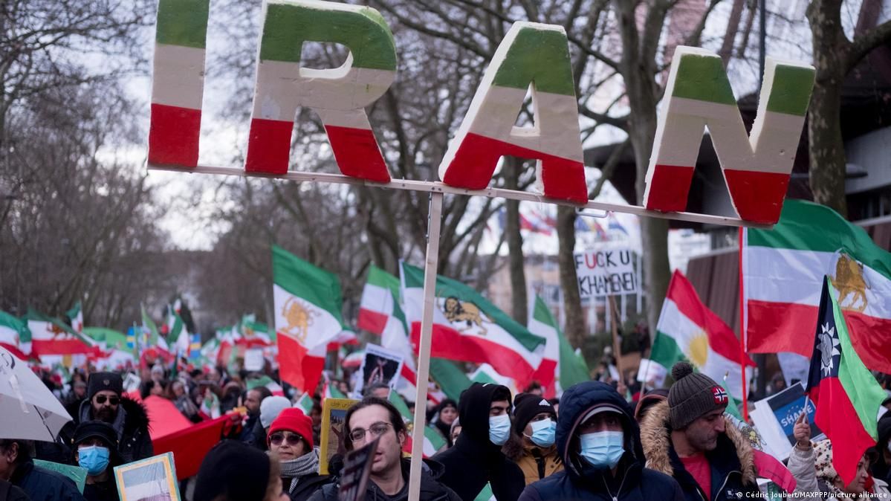
پیش از پرداختن به جزئیات این فشار، باید یک نکته را روشن کرد: ابزارهایی که در ادامه میآید — فشار اقتصادی هدفمند، افشای فساد، و حمایت اطلاعاتی از جامعه مدنی — وسیلهاند، نه هدف. اگر این ابزارها بدون افقی روشن و بدون تعهد به یک نقطه پایانِ مشخص به کار گرفته شوند، صرفاً به تداوم وضعیتی فرساینده و دردناک برای مردم ایران میانجامند؛ وضعیتی که در آن رژیم تضعیف میشود اما هرگز از میان نمیرود، و مردم در میانه یک بحران بیپایان گرفتار میمانند. چنین نتیجهای را نباید با موفقیت راهبردی اشتباه گرفت؛ در واقع، این دقیقاً بدترین سرنوشت ممکن برای مردم ایران است. هدف نهایی این ابزارها باید تسریع فروپاشی مشروعیت رژیم و هموار کردن مسیر برای گذار کامل به نظامی ملی و دموکراتیک باشد، نه نگهداشتن ابدی رژیم در وضعیتی تضعیفشده اما پایدار.
اما پیششرط طراحی هرگونه فشار مؤثر، پایبندی به یک اصل بنیادین است: ایران، جمهوری اسلامی نیست. این تمایز که پیشتر در این نوشتار بهتفصیل بررسی شد، در اینجا نیز باید به یک قاعده عملیاتی تبدیل شود، نه صرفاً یک گزاره نظری. هر ابزار فشاری که در ادامه معرفی میشود — از تحریمهای هدفمند گرفته تا افشاگری مالی — باید از این معیار عبور کند: آیا این اقدام سپاه، نهادهای امنیتی و شبکههای رانتی حاکمیت را هدف میگیرد، یا هزینه آن، همچون گذشته، بر دوش مردم عادی ایران میافتد؟ فشاری که این دو را از هم تفکیک نکند، نهتنها ناکارآمد است، بلکه به همان رژیمی که قرار است تضعیف شود، این فرصت را میدهد که رنج ملت را بهعنوان مدرکی از خصومت آمریکا با «ایران» به نمایش بگذارد. برعکس، فشاری که آشکارا و بهصورت مستند میان رژیم و ملت خط بکشد — با هدف قرار دادن داراییهای سپاه بهجای داراییهای خانوار، با هدف قرار دادن شبکههای پولشویی نخبگان بهجای واردات کالاهای اساسی — هم از نظر اخلاقی موجهتر است و هم از نظر راهبردی مؤثرتر، زیرا مشروعیت رژیم را در همان نقطهای هدف میگیرد که رژیم بیشترین آسیبپذیری را دارد: ادعای دروغینش مبنی بر یکی بودن با ایران.
این مسیر از فشار اقتصادی آغاز میشود، اما این فشار باید هوشمندانه طراحی شود؛ صرفِ اعمال تحریمهای گسترده الزاماً به موفقیت راهبردی منجر نمیشود. اگر تحریمها تنها به مجازاتی نمادین تبدیل شوند، رژیم خود را با شرایط جدید تطبیق میدهد، در حالی که مردم عادی هزینه اصلی را میپردازند. فشار مؤثر باید بیوقفه متوجه مراکز واقعی قدرت، سرکوب و فساد در جمهوری اسلامی باشد، بهویژه شبکههایی که پیرامون سپاه پاسداران انقلاب اسلامی شکل گرفتهاند. سپاه صرفاً یک نهاد نظامی نیست؛ این نهاد امپراتوریای سیاسی، مالی، اطلاعاتی و اقتصادی است. شبکههای عظیم رانت، بنگاههای اقتصادی، مسیرهای بازار سیاه و بخش بزرگی از سازوکارهای اعمال زور، همگی زیر نفوذ آن قرار دارند؛ هر راهبرد جدی برای تضعیف جمهوری اسلامی باید سپاه را ستون اصلی بقای رژیم بداند.
اما این هدف تنها با تکرار ادبیات تحریمها محقق نمیشود. باید بهصورت نظاممند، مسیرهای درآمدی، واسطههای مالی، شبکههای دور زدن تحریمها، زنجیرههای تأمین و بازیگران خارجیای که به بقای این ساختار کمک میکنند، مختل شوند. هدف صرفاً محکوم کردن رژیم نیست؛ هدف فرسایش تدریجی توان عملیاتی آن است.
در عین حال، فشارها باید شخصیتر و هدفمندتر شوند. حکومتهای اقتدارگرا معمولاً به این شیوه دوام میآورند که هزینهها را بر دوش جامعه میاندازند، اما نخبگان حاکم را از پیامدهای آن مصون نگه میدارند؛ جمهوری اسلامی این الگو را به کمال رسانده است. مردم عادی تورم، سرکوب و افول اقتصادی را تحمل میکنند، در حالی که حلقههای نزدیک به قدرت امتیازات و ثروت خود را حفظ میکنند. همین عدمتقارن باید مستقیماً هدف قرار گیرد.
یکی از بزرگترین نقاط ضعف جمهوری اسلامی، ریاکاری نخبگان آن است. طبقه حاکم از ایثار، شهادت، مقاومت در برابر غرب و خلوص انقلابی سخن میگوید؛ اما بسیاری از اعضای همین طبقه در خارج از کشور دارایی دارند، روابط تجاری بینالمللی خود را حفظ کردهاند، از سبک زندگی لوکس برخوردارند و خانوادههایشان در کشورهای دیگر زندگی یا تحصیل میکنند. از مردم میخواهند دشواریهای «انقلابی» را تحمل کنند، اما خود در خفا از همان نظام جهانی بهرهمند میشوند که در سخنرانیهایشان آن را محکوم میکنند. این ریاکاری مسئلهای حاشیهای نیست؛ میتواند به نقطهای انفجاری برای مشروعیت رژیم تبدیل شود.
از همین رو، افشای این تناقض باید به یکی از ابزارهای اصلی فشار تبدیل شود: شفافسازی درباره فساد مالی، انتشار اطلاعات اطلاعاتی، افشای ثروت و داراییهای مقامات، تحریم هدفمند افراد، مستندسازی اموال و سرمایههای آنان در خارج از کشور و آشکار کردن شبکههای مالی وابسته به حکومت، همگی میتوانند شکاف میان نخبگان حاکم و جامعه را عمیقتر کنند. هدف صرفاً مجازات نیست؛ هدف سلب مشروعیت از رژیم است.
این رویکرد با ذهنیت و جهانبینی ونس نیز کاملاً همخوان است. ونس نسبت به نخبگانی که مردم عادی را به فداکاری فرامیخوانند، اما خود را از پیامدهای آن مصون نگه میدارند، حساسیت ویژهای دارد؛ این الگو یکی از محورهای اصلی نقد او به نخبگان سیاسی آمریکاست، اما همین الگو در جمهوری اسلامی با شدتی بهمراتب بیشتر دیده میشود.
با این همه، فشار بهتنهایی کافی نیست؛ هر راهبرد جدی باید همزمان به تقویت جامعه ایران نیز بیندیشد. در همینجاست که بسیاری از سیاستگذاران آمریکایی دچار تردید میشوند؛ آنان نگراناند که حمایت از جامعه مدنی ایران یادآور پروژههای شکستخورده «ترویج دموکراسی» باشد. این نگرانی قابل درک است، اما در بسیاری از موارد بر پیشفرضی نادرست استوار است. تقویت جامعه ایران به معنای تحمیل نهادهای سیاسی یا مهندسی آینده کشور نیست؛ بلکه به این معناست که توانایی ایرانیان برای ارتباط با یکدیگر، سازماندهی، دسترسی آزاد به اطلاعات و مقاومت در برابر انزوای تحمیلشده از سوی حکومت افزایش یابد.
شش ماه پیش از نگارش این سطور، جهان شاهد یکی از دلیرانهترین و در عین حال دردناکترین فصلهای تاریخ معاصر ایران بود. در دیماه ۱۴۰۴ (ژانویه ۲۰۲۶)، اعتراضاتی که از بازار تهران آغاز شد، ظرف چند روز به بیش از دویست شهر در هر سیویک استان کشور گسترش یافت؛ به گفته برخی ناظران، بزرگترین خیزش مردمی از انقلاب ۱۳۵۷ تاکنون. مردمی که تنها با دست خالی به خیابان آمده بودند، پرچم شیروخورشید را — نماد ایران پیش از جمهوری اسلامی — برافراشتند و در برابر گلولههای نیروهای امنیتی ایستادند. در شبهای هجده و نوزده دیماه، سرکوبی خونین رخ داد که گزارشهای رسانهای و حقوق بشری گوناگون، شمار کشتهشدگان را از چند هزار تا بیش از سی هزار نفر تخمین میزنند؛ رقمی که به دلیل قطع کامل اینترنت و محدودیت شدید اطلاعاتی هرگز بهطور قطعی مشخص نخواهد شد، اما به هر روایت، از خونینترین سرکوبهای تاریخ معاصر ایران به شمار میرود.
این رویداد، بهتنهایی، پاسخی روشن به این پرسش میدهد که مردم ایران تا چه اندازه حاضرند برای پایان دادن به این رژیم هزینه بپردازند. آنان با دست خالی، در برابر رگبار گلوله، پرچمی را برافراشتند که هیچ سلاحی نبود، تنها نمادی از هویتی که رژیم چهار دهه کوشیده بود آن را پاک کند. این دقیقاً همان نوع شهامتی است که هر راهبرد جدی غربی باید آن را به رسمیت بشناسد: نه توصیفی انتزاعی از «خواست مردم»، بلکه شاهدی زنده و مستند از ارادهای که با وجود قطع ارتباطات، سرکوب و کشتار، بارها به خیابان بازمیگردد. ونس، که به شواهد ملموس بیش از انتزاعات حساسیت نشان میدهد، باید این تصویر را در نظر داشته باشد: مردمی که هیچ اهرم قدرتی جز جان خود در اختیار ندارند، و با این حال، بارها و بارها آن را به خطر میاندازند. حمایت از چنین جامعهای، آرمانگرایی نیست؛ بازشناسی واقعیتی است که پیشتر روی زمین رخ داده است.
جمهوری اسلامی تا حد زیادی بقای خود را مدیون کنترل جریان اطلاعات است؛ سانسور، محدودیت اینترنت، نظارت فراگیر، سرکوب دیجیتال و اخلال در ارتباطات ابزارهایی فرعی نیستند، بلکه از مهمترین پایههای بقای این نظام به شمار میروند. از همین رو، حمایت از آزادی اینترنت، فناوریهای مقابله با سانسور، زیرساختهای امن ارتباطی و افزایش تابآوری دیجیتال جامعه ایران، نباید صرفاً اقداماتی بشردوستانه تلقی شوند؛ اینها اولویتهایی راهبردی هستند. فشار اطلاعاتی اهمیت دارد، زیرا حکومتهای اقتدارگرا بیش از هر چیز از حقیقت هراس دارند. جمهوری اسلامی منابع عظیمی را صرف کنترل روایتها میکند و میکوشد جامعه را متقاعد کند که مقاومت بیفایده است، جهان خارج اهمیتی به ایرانیان نمیدهد و هیچ جایگزین معتبری برای وضع موجود وجود ندارد. شکستن این انحصار اطلاعاتی، بدون نیاز به تشدید تنش نظامی، یکی از مؤثرترین راههای تضعیف رژیم است.
همین نکته ما را به اصل مهم دیگری میرساند: آمریکا باید همواره میان «ایران» و «جمهوری اسلامی» تمایز قائل شود. شاید این یکی از مهمترین تغییراتی باشد که جی. دی. ونس میتواند در نحوه بیان سیاست خود نسبت به ایران ایجاد کند. طی چهار دهه گذشته، جمهوری اسلامی همواره از درهمآمیختن نام ایران با رژیم حاکم سود برده است؛ هرگاه فشارهای خارجی افزایش یافته، حکومت کوشیده است مخالفت با خود را بهعنوان دشمنی با ایران معرفی کند، و به این ترتیب ملیگرایی ایرانی را در خدمت بقای رژیم به کار گرفته است. این روایت باید شکسته شود.
پیام آمریکا باید بارها و بارها بر یک حقیقت ساده تأکید کند: ایالات متحده با جمهوری اسلامی مخالف است، نه با مردم ایران. این تمایز فقط از نظر اخلاقی اهمیت ندارد، بلکه از نظر راهبردی نیز بسیار قدرتمند است: تبلیغات رژیم را تضعیف میکند، به مردم ایران اطمینان میدهد که هدف فشارها نیستند، مرز میان حکومت و جامعه را روشنتر میسازد، و نشان میدهد که فشارهای آمریکا متوجه ساختارهای سرکوب است، نه هویت ملی ایران. این چارچوب برای ونس اهمیت ویژهای دارد، زیرا حساسیت او نسبت به پروژههای ایدئولوژیکِ ملتسازی را برنمیانگیزد؛ استدلال این نیست که آمریکا باید ایران را مطابق الگوی خود بازسازی کند، بلکه این است که آمریکا نباید به تقویت رژیمی ادامه دهد که بخش بزرگی از جامعه ایران خود قربانی آن است.
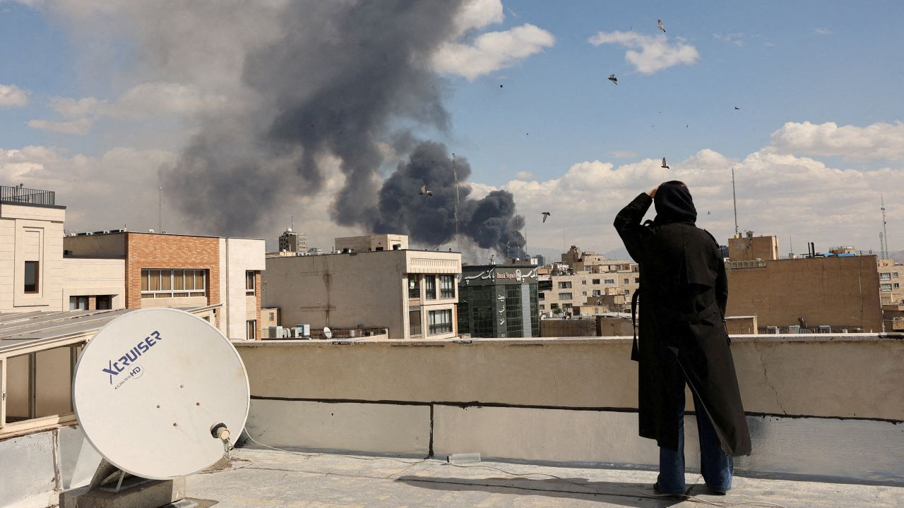
در اینجا به حساسترین و در عین حال مهمترین موضوع میرسیم: تغییر رژیم. همین عبارت معمولاً برای ونس یادآور تجربه عراق است و بلافاصله زنگ خطرهای ذهنی او را به صدا درمیآورد؛ اما باید با صراحت گفت که پرهیز از این واژه نباید به معنای پرهیز از خودِ هدف باشد. فرسایش تدریجی رژیم، اگر بهعنوان راهبردی بیپایان و بدون افق مشخص دنبال شود، نهتنها جایگزین مناسبی برای تغییر رژیم نیست، بلکه بدترین سرنوشت ممکن برای مردم ایران است: تداوم نامحدود سرکوب، فقر و اختناق، بدون هیچ نقطه پایانی روشن. هدف راهبردی واقعی باید همان چیزی باشد که اکثریت قاطع جامعه ایران — آنگونه که در اعتراضات پیدرپی سالهای اخیر و در شهادت میلیونها ایرانی داخل و خارج از کشور آشکار شده — خواهان آن است: پایان کامل حاکمیت جمهوری اسلامی و گذار به نظامی ملی، سکولار و دموکراتیک. فرسایش، در بهترین حالت، میتواند ابزاری در مسیر این هدف باشد؛ اما هرگز نباید با خودِ هدف اشتباه گرفته شود.
ماهیت بنیادین جمهوری اسلامی هرگز از طریق نشستها، مذاکرات یا امضای توافقهای تازه تغییر نخواهد کرد؛ چنین رویکردی مسیری واقعی بهسوی صلح پایدار منطقهای نیست، بلکه صرفاً طناب نجات مالی تازهای به یک نظام ناپایدار و خصمانه میبخشد. مردم ایران دیگر خواهان اصلاحات جزئی، تعدیلهای سیاستی یا تعمیرات ساختاری نیستند؛ آنان رهایی کامل از رژیمی را میخواهند که نزدیک به نیمقرن است کشورشان را به گروگان گرفته است. از آنجا که نمیتوان به خویشتنداری داوطلبانه این رژیم اعتماد کرد، جامعه بینالمللی باید حقوق بشر را بهعنوان خطوط قرمزِ غیرقابلمذاکره در هر تماس دیپلماتیک بگنجاند؛ پایبندی سرسختانه به این خطوط قرمز، ابزاری بیبدیل برای به حداکثر رساندن فشار دیپلماتیک، فرسایش نظاممند مشروعیت رژیم، و توانمندسازی قانونی مردم برای تحمیل تغییر ساختاری از درون است.
افزون بر این، حفظ وضع موجود یا زنده نگهداشتن رژیم از طریق توافقهای مهارکننده، تنها منافع محدود مالی و ژئوپلیتیکی برخی حلقهها را تأمین میکند. همانگونه که پیشتر درباره بیطرفی کاذب میانجیها گفته شد، برخی مشاوران بانفوذ و بازیگران منطقهای، ایرانی ضعیف، فرسوده و وابسته را — که نفت خود را در ازای کالاهای اولیه معامله میکند — به ایرانی دموکراتیک و نیرومند که میتواند از نظر اقتصادی و فرهنگی بر همسایگان خود بدرخشد، ترجیح میدهند. تن دادن به این راهبرد مهارِ خودخواهانه، از پاداشهای راهبردی عظیمی که یک ایران آزاد میتواند به جهان عرضه کند، چشمپوشی میکند. ایرانی نیرومند، مرفه از نظر اقتصادی و دموکراتیکِ سکولار، دیگر هیچ انگیزه ایدئولوژیکی برای تداوم خصومت با اسرائیل و غرب نخواهد داشت؛ با توجه به وسعت جغرافیایی، موقعیت ژئوپلیتیک حساس و پیشینه تاریخی عمیق این کشور، دگرگونی واقعی نظام سیاسی ایران میتواند محاسبات منطقهای را برای همیشه تغییر دهد، شبکههای تروریستی وابسته به دولت را خنثی کند، و ایران را به ستونی برای ثبات در قلب خاورمیانه بدل سازد.
ایالات متحده نیازی ندارد همه مراحل گذار سیاسی ایران را طراحی و هدایت کند؛ کاری که باید انجام دهد، بسیار سادهتر است: از اجرای سیاستهایی که هر بار رژیم را در لحظه ضعف نجات میدهند، دست بردارد.
شاید این مهمترین نکته این فصل باشد. در بسیاری از موارد، سیاست غرب ناخواسته به آخرین تکیهگاه ثبات رژیم تبدیل شده است: هر زمان فشارها به اوج میرسد و حکومت در موقعیت آسیبپذیری قرار میگیرد، مذاکرات آغاز میشود، فشار کاهش مییابد، منابع مالی دوباره در اختیار رژیم قرار میگیرد، فشار خارجی فروکش میکند، و حکومت تعادل ازدسترفته خود را بازیابی میکند. این چرخه بارها و بارها عمر جمهوری اسلامی را طولانیتر کرده است.
برای تسهیل این گذار، راهبرد جهانی باید با مقاومت فعالی که هماکنون در داخل کشور جریان دارد، همسو شود. زمینه درونی جامعه ایران بهشدت دگرگون شده است؛ شهروندان عادی بهطور مستمر در قالب نافرمانی مدنی و مقاومت بدون خشونت مشارکت میکنند. سیاست غرب باید به این پویایی داخلی، فرصتی واقعی و تحولی قطعی در سرنوشت بدهد.
در عرصه بینالمللی، فعالسازی سازوکار «بازگشت خودکار تحریمها» (اسنپبک) گامی حیاتی است؛ قرار دادن جمهوری اسلامی ذیل فصل هفتم منشور سازمان ملل میتواند این رژیم را از نظر حقوقی منزوی کند و راه را برای فشار هماهنگ جهانی بگشاید. همچنین، با توجه به سرکوبهای خونین سالهای اخیر، جامعه بینالمللی دیگر نمیتواند نگاه خود را برگرداند؛ جهان باید از چارچوب «مسئولیت حمایت» (R2P) بهعنوان سازوکاری اخلاقی، حقوقی و سیاسی — ویژه بازداشتن یک حکومت مستبد از کشتار و نقض حقوق بشر شهروندان خود — حمایت فعال کند.
سرانجام، یک گذار موفق نیازمند چارچوبی مشخص برای پیشگیری از هرجومرج داخلی است. بسیاری از ایرانیان، بازگشت به نوعی رهبری ملیِ سکولار — از جمله چهرههایی که در میان اپوزیسیون از پایگاه شناختهشدهای برخوردارند، مانند رضا پهلوی — را ضامنی برای عبور کشور از دوره گذاری ناپایدار، با کمترین آسیب ممکن میدانند. بهرسمیتشناختن بینالمللی و همسویی دیپلماتیک با چنین جایگزین سکولاری، میتواند مردم ایران را در برچیدن دیکتاتوری کنونی و بازسازی موفق یک دولت مسئول، سکولار و دموکراتیک توانمند سازد. البته باید تأکید کرد که این گزاره به معنای تأیید یا رد شخص یا جریان خاصی از سوی نگارنده نیست، بلکه بازتاب یکی از جریانهای اصلی گفتمان اپوزیسیون ایرانی است که در طراحی هر سیاست واقعبینانه باید مورد توجه قرار گیرد.
با اینهمه، نکتهای راهبردی درباره نحوه ارائه این هدف به ونس باید در نظر گرفته شود. هدف نهایی — یعنی پایان کامل حاکمیت جمهوری اسلامی — را میتوان و باید با زبانی متفاوت از آنچه یادآور تجربه عراق است، برای او صورتبندی کرد. در گفتوگو با ونس، بهتر است این هدف نه با عنوان صریح «تغییر رژیم از طریق مداخله خارجی»، بلکه در قالب «فرسایش تدریجی و مدیریتشده از درون» ارائه شود؛ رویکردی که با غرایز ضدمداخلهگرایانه او سازگارتر است. اما نباید فراموش کرد که این صرفاً یک راهبرد ارتباطی است، نه تغییری در هدف راهبردی خودِ سیاست. غایتِ این سیاست، فرسایش برای فرسایش نیست؛ فرسایش تنها در صورتی توجیه راهبردی و اخلاقی دارد که مسیری روشن بهسوی پایان کامل این نظام و آغاز دوران گذار باشد.
راهبردی که با ذهنیت ونس سازگار باشد، باید این الگو را کنار بگذارد و در عوض این پرسش دشوارتر را مطرح کند: آیا این سیاست در بلندمدت بار مسئولیت آمریکا را کاهش میدهد، یا فقط بحران بعدی را به تعویق میاندازد؟ همین پرسش به نتیجهای متفاوت میانجامد: جمهوری اسلامی منشأ ثبات پایدار نیست؛ خودِ این رژیم یکی از مهمترین تولیدکنندگان بیثباتی در منطقه است. این حکومت، با حمایت از نیروهای نیابتی، ماجراجویی هستهای، تشدید تنشهای منطقهای، تقویت گروههای ضدآمریکایی، ناامن کردن مسیرهای دریایی، دیپلماسی گروگانگیری و بحرانآفرینی مستمر، پیوسته بیثباتی تولید میکند. در چنین شرایطی، دفاع از بقای این رژیم به نام «ثبات منطقه» روزبهروز دشوارتر میشود.
و در نهایت، این شاید قویترین استدلالی باشد که میتوان برای ونس مطرح کرد: اتخاذ سیاستی سختگیرانهتر در برابر جمهوری اسلامی، به معنای فاصله گرفتن از اصول «اول آمریکا» نیست؛ بلکه ادامه منطقی همان اصول است. سیاستی که حمایت رژیم از تروریسم را کاهش دهد، جنگهای نیابتی را تضعیف کند، خطر هستهای را پایین بیاورد، هزینههای نظامی آینده آمریکا را کمتر کند و همزمان با خواست بخش بزرگی از جامعه ایران همسو باشد، نه آرمانگرایی لیبرال است و نه مداخلهجویی ایدئولوژیک؛ این واقعگرایی راهبردی است که بر واقعیتهای سیاسی استوار شده است.
این همان نکتهای است که ونس در نهایت باید با آن روبهرو شود. انتخاب واقعی میان جنگ بیپایان و دیپلماسی بیپایان نیست؛ انتخاب واقعی میان دو مسیر است: ادامه مدیریت بحرانهایی که جمهوری اسلامی پیوسته تولید میکند، یا اتخاذ راهبردی بلندمدت که احتمال شکلگیری ایرانی پس از حکومت دینی را افزایش دهد. راه نخست تنها نشانهها را مدیریت میکند؛ راه دوم خودِ علت بیماری را هدف میگیرد. سیاست آمریکا، در بخش بزرگی از چهار دهه گذشته، بیشتر بر مدیریت نشانهها متمرکز بوده است. یک راهبرد واقعبینانهتر، سرانجام باید خودِ بیماری را هدف قرار دهد. و «علت بیماری» چیزی جز خودِ جمهوری اسلامی نیست؛ از این رو، هر راهبرد واقعبینانه، در نهایت، باید در خدمت یک هدف روشن قرار گیرد: پایان این نظام و گذار به ایرانی آزاد.
در ژرفترین لایه، مناقشه بر سر ایران صرفاً اختلافی سیاسی درباره تحریم، دیپلماسی، بازدارندگی یا استفاده از نیروی نظامی نیست؛ آزمونی فلسفی است برای اینکه اساساً «قدرت» را چگونه میفهمیم. دقیقاً به همین دلیل است که ایران، هم برای جی. دی. ونس و هم برای اندیشه واقعگرایانه در سیاست خارجی، به چالشی تا این اندازه بنیادین تبدیل شده است.
با وجود همه اختلافنظرهای تاکتیکی درباره سیاست ایران، مسئله اصلی در نهایت به پرسشی عمیقتر بازمیگردد: اگر رژیمی مانند یک بازیگر راهبردیِ متعارف رفتار نکند، چه اتفاقی میافتد؟
واقعگرایی همچنان یکی از نیرومندترین چارچوبهای تحلیل در سیاست خارجی است، زیرا از حقیقتی سخت و انکارناپذیر آغاز میکند: دولتها در جهانی عمل میکنند که سرشار از عدم قطعیت، رقابت، معمای امنیت و کشمکش بر سر قدرت است؛ نیتهای خیر تعارض را از میان نمیبرند و یقین اخلاقی نیز هزینههای راهبردی را محو نمیکند. از همین رو، واقعگرایان بر طرح پرسشهایی دشوار اما ضروری تأکید دارند: منافع واقعی چیست؟ توازن قدرت چگونه است؟ هزینه مداخله چه خواهد بود؟ و پیامدهای درجهدوم اقدام یا عدم اقدام کداماند؟ اینها پرسشهایی جدیاند، و ونس نیز بهدرستی بر ضرورت طرح آنها اصرار دارد.
بدبینی او نسبت به مداخلهگراییِ اخلاقگرایانه، در خلأ شکل نگرفته است؛ این نگرش محصول تجربه فاجعههای دوران پس از جنگ سرد، و بیش از همه جنگ عراق است. عراق به نسلی از آمریکاییها آموخت که نخبگان سیاست خارجی میتوانند جاهطلبی را با راهبرد اشتباه بگیرند و خطابه را جای واقعیت بنشانند؛ آنها ممکن است توان خود را برای دگرگون ساختن جوامع بیش از اندازه برآورد کنند، هزینههای جنگ را دستکم بگیرند و خوشبینیِ مبتنی بر حدس و گمان را بهعنوان قطعیت راهبردی عرضه کنند. ونس این درس را عمیقاً آموخته است؛ احتیاط او نه غیرمنطقی است و نه حاصل ترس، بلکه از بسیاری جهات، اصلاحی ضروری بر دههها اعتمادبهنفسِ افراطیِ نخبگان سیاست خارجی آمریکا به شمار میآید.
و دقیقاً به همین دلیل است که مسئله ایران چنین اهمیت ویژهای پیدا میکند: زیرا ایران خودِ واقعگرایی را وادار میکند تا با محدودیتهایش روبهرو شود.
در نسخه کلاسیک واقعگرایی، معمولاً فرض بر این است که دولتها، هر اندازه هم خصمانه باشند، در نهایت بر اساس منطق بقا، قدرت، بازدارندگی و منفعت عقلانی قابل فهماند؛ حتی دشمنانی که از نظر ایدئولوژیک تفاوتهای بنیادین دارند، عموماً بازیگرانی تلقی میشوند که در نهایت میخواهند زنده بمانند، قدرت خود را حفظ کنند و از خسارتهای فاجعهبار پرهیز نمایند. بر پایه این الگو، رفتار راهبردی را میتوان از طریق تهدید معتبر، اهرم فشار، بازدارندگی و چانهزنی تحت تأثیر قرار داد؛ این مدل در بسیاری از موارد کارآمد است، اما بهترین عملکرد خود را زمانی نشان میدهد که ایدئولوژی در برابر منطق بقا، نقشی ثانویه داشته باشد.
اینجاست که جمهوری اسلامی این فرض را به چالش میکشد. بیشک این رژیم نیز خواهان بقاست؛ نه رژیمی انتحاری است و نه نسبت به هزینه، بازدارندگی، فشار یا توازن قوا بیاعتناست. اما «بقا» بهتنهایی رفتار آن را توضیح نمیدهد. جمهوری اسلامی صرفاً دولتی نیست که برای تأمین امنیت خود تلاش میکند؛ بلکه پروژهای انقلابی و ایدئولوژیک است که امنیت را در خدمت مأموریتی بزرگتر دنبال میکند. و همین تمایز همهچیز را دگرگون میسازد.
خصومت جمهوری اسلامی با ایالات متحده، اسرائیل، دموکراسی لیبرال، مشروعیت سیاسیِ سکولار و نفوذ غرب، صرفاً یک ترجیح سیاسیِ انعطافپذیر نیست؛ این خصومت در تار و پود معماری ایدئولوژیک نظامی تنیده شده که پس از انقلاب ایران شکل گرفت. این مؤلفهها تزئینات خطابی یا شعارهای تبلیغاتی نیستند؛ بر مشوقهای نهادی، مشروعیت نخبگان، پیامرسانی راهبردی و هویت خودِ رژیم اثر میگذارند.
در همین نقطه است که واقعگرایی با دشواری روبهرو میشود. واقعگرایی فرض میکند که بازیگران عقلانی، اگر تحت فشار کافی قرار گیرند، برای حفظ منافع بنیادین خود رفتارشان را تعدیل میکنند؛ اما اگر خودِ مشروعیت ایدئولوژیک به یکی از آن منافع بنیادین تبدیل شود، چه؟ اگر خصومت صرفاً ابزاری برای رسیدن به هدف نباشد، بلکه بخشی از هویتِ نظام باشد، آنگاه چه؟ اگر عقبنشینی، از منظر ایدئولوژیک، هزینهای درونی داشته باشد که از فشارهای بیرونی سنگینتر باشد، چه؟
این پرسشها محدودیتهای تحلیلِ سادهانگارانه واقعگرایانه را آشکار میکنند. جمهوری اسلامی بارها نشان داده است که نظامهای ایدئولوژیک میتوانند فشارهای اقتصادی سنگین، ناآرامیهای اجتماعی، انزوای دیپلماتیک و فشارهای راهبردی را برای مدتهای طولانی تحمل کنند، بیآنکه از هویت بنیادین خود دست بکشند. البته این بدان معنا نیست که چنین نظامهایی شکستناپذیرند؛ بلکه به این معناست که محاسبات هزینه و فایده آنها را نمیتوان صرفاً با منطق مادی توضیح داد. ایدئولوژی تعریفِ «رفتار عقلانی» را تغییر میدهد. این نکته اهمیتی اساسی دارد.
رژیمی که بخشی از مشروعیت خود را از «مقاومت دائمی» میگیرد، مصالحه را بهگونهای متفاوت از دولتهای متعارف تفسیر میکند. رژیمی که الهیات، اسطوره انقلاب و بقای سیاسی را درهم آمیخته است، ممکن است برای ایستادگیِ نمادین ارزشی قائل شود که مدلهای متعارف واقعگرایی هرگز آن را پیشبینی نمیکنند. رژیمی که خود را پاسدار نظم سیاسیِ الهی معرفی میکند، ممکن است سطحی از رنج و هزینه را بپذیرد که برای بسیاری از حکومتهای عادی ویرانگر و غیرقابل تحمل باشد.
این واقعیت واقعگرایی را باطل نمیکند؛ آن را تکمیل میکند. واقعگراییِ اصیل نباید همه بازیگران را ماشینحسابهای راهبردیِ یکسانی فرض کند. واقعگراییِ واقعی یعنی جهان را همانگونه که هست دید، حتی هنگامی که ایدئولوژی رفتار یک دولت را بهگونهای معنادار دگرگون میکند.
در همینجا، پارادوکسی اساسی پیشِ روی ونس قرار میگیرد. غریزه واقعگرایانه او از یک خطای خطرناک محافظتش میکند: مداخلهگراییِ سادهلوحانه. اما همین غریزه ممکن است او را در معرض خطایی دیگر قرار دهد که شاید کمتر به چشم بیاید، اما به همان اندازه خطرناک است: اعتماد بیش از حد به قدرت بازدارندگی و چانهزنی برای تثبیت اوضاع.
تنش اصلی دقیقاً همینجاست. اگر ونس عراق را به الگوی تاریخیِ مسلط برای فهم ایران تبدیل کند، بهطور طبیعی نسبت به هر سیاست فشاری که بوی فروپاشی رژیم بدهد، بدبین خواهد شد؛ در ذهن او چنین مسیری یادآور پیامدهایی آشناست: جنگ داخلی، تجزیه، اشغال، و گرفتار شدن آمریکا در باتلاقی بیپایان از تعهدات نظامی. اما اگر او واقعگرایی را درباره ایران بیش از اندازه مکانیکی و قالبی به کار گیرد، در معرض خطای دیگری قرار میگیرد: ممکن است جمهوری اسلامی را صرفاً حکومتی اقتدارگرا، سرسخت اما در نهایت قابل مهار تصور کند. و شاید همین بزرگترین نقطه کور در تحلیل او باشد.
زیرا مسئله اصلی جمهوری اسلامی صرفاً این نیست که رفتاری تهاجمی دارد؛ مسئله عمیقتر آن است که خودِ رژیم، به اقتضای ساختار ایدئولوژیکش، پیوسته تولیدکننده بیثباتی است. و دقیقاً در همین نقطه است که ایران به آزمون نهایی واقعگرایی تبدیل میشود.
واقعگرایان معمولاً ثبات را بر هر چیز دیگری ترجیح میدهند، زیرا بیثباتی به معنای افزایش تعارض، نااطمینانی، تشدید بحران و بالا رفتن هزینههای راهبردی است؛ از این رو، حتی اگر حکومتی خصمانه باشد، غالباً حفظ ثبات آن بر خطر فروپاشیاش ترجیح داده میشود. اما اگر حفظ یک رژیم به نام ثبات، خود به تولید بیثباتی مزمن بینجامد، چه؟ اگر همان بازیگری که قرار است حفظ شود، خود موتور دائمی بحران باشد، چه؟ اگر وضع موجود نه یک تعادل پایدار، بلکه چرخهای پایانناپذیر از بیثباتی باشد، چه؟
این دقیقاً همان وضعیت ایران است. جمهوری اسلامی بهطور مستمر جنگهای نیابتی، باجگیری هستهای، تشدید تنشهای منطقهای، شبهنظامیگری ضدآمریکایی، گروگانگیری دیپلماتیک، ناامنی دریایی و رویاروییهای اجباری و فرساینده را بازتولید میکند؛ اینها انحرافهای مقطعی از حکمرانی عادی نیستند، بلکه خروجیهای تکرارشونده خودِ نظاماند. در چنین شرایطی، حفظ این رژیم ممکن است نهتنها بیثباتی بلندمدت را کاهش ندهد، بلکه آن را نهادینه کند. و این واقعیت ما را ناگزیر به بازنگریای عمیق میکند: شاید انتخاب واقعی میان ثبات و آشوب نباشد، بلکه میان بیثباتیِ مزمن و گذاری دشوار باشد. و همین تمایز همهچیز را تغییر میدهد.
برای ونس، شاید این مهمترین چالش فکریِ پیشِ رو باشد. مسئله این نیست که واقعگرایی باید کنار گذاشته شود و جای خود را به آرمانگرایی بدهد؛ چنین برداشتی اساساً سوءتفاهمی درباره استدلال این نوشتار است. پاسخِ شکستِ مداخلهگراییِ لیبرال، پناه بردن به لشکرکشیهای اخلاقیِ تازه نیست؛ پاسخ، واقعگراییِ بهتر است.
اما واقعگراییِ بهتر، پرسشهای دشوارتری مطرح میکند: میپرسد آیا مدلی که عمدتاً بر بازدارندگی و چانهزنی بنا شده، واقعاً میتواند رفتار نظامهای انقلابیِ ایدئولوژیک را توضیح دهد؟ میپرسد آیا آرامشِ کوتاهمدت ممکن است در حقیقت نشانهای از فرسایش راهبردیِ بلندمدت باشد؟ و میپرسد آیا گاهی حفظ یک رژیم خصمانه، از پذیرش مخاطراتِ یک دگرگونی سیاسی، خطرناکتر نیست؟
از همه مهمتر، واقعگراییِ بهتر میان ثبات ظاهری و ثبات ساختاری تفاوت قائل میشود؛ این دو یکی نیستند. ثبات ظاهری یعنی نبودِ فروپاشیِ فوری؛ اما ثبات ساختاری یعنی وجودِ تعادلی پایدار و ماندگار. جمهوری اسلامی شاید در ظاهر اولی را فراهم کند، اما همزمان دومی را بهتدریج از میان میبرد.
دقیقاً به همین دلیل است که ایران واقعگرایی را تا این اندازه به چالش میکشد: زیرا واقعگرایان را با این احتمال دشوار روبهرو میکند که شاید برخی رژیمها را نتوان برای همیشه مهار و مدیریت کرد، چراکه هویت ایدئولوژیک آنها به تولید مداوم رویارویی و تنش وابسته است.
و این ما را دوباره به استدلال اصلی این مقاله بازمیگرداند. حمایت از مردم ایران در برابر جمهوری اسلامی، اغلب بهگونهای تصویر میشود که گویی صرفاً محصول آرمانگرایی، ترویج دموکراسی یا احساسات ضدحکومتی است؛ اما این تصویر، منطق راهبردیِ عمیقتر این استدلال را نادیده میگیرد. دفاع از مردم ایران صرفاً بر همدلی اخلاقی استوار نیست، هرچند چنین همدلیای کاملاً موجه است؛ و همچنین بر این تصور خوشبینانه و آرمانشهری بنا نشده که گذار سیاسی آسان و بیهزینه خواهد بود. این استدلال بر ارزیابیای واقعبینانه و سنجیده از واقعیت راهبردیِ بلندمدت استوار است. اگر جمهوری اسلامی از نظر ساختاری به خصومت ایدئولوژیک و بازتولید مستمر بیثباتی متعهد باشد، آنگاه حفظ نامحدود آن، شاید خود غیرواقعبینانهترین گزینه باشد.
این آخرین چالش برای جهانبینیِ ونس است. بزرگترین نقطه قوت او، تردید در برابر توهم است؛ او به روایتهای نخبگانی که خطابه را با واقعیت اشتباه میگیرند، اعتماد ندارد. اجماعهای رایج را به پرسش میکشد، از انتزاعهای آرامشبخش فاصله میگیرد و همواره میپرسد: چه کسی سود میبرد؟ هزینه واقعی چیست؟ و بعد از آن چه خواهد شد؟
اگر همین غریزههای فکری را درباره ایران نیز به کار گیرد، ممکن است به نتیجهای متفاوت و دشوارتر برسد. شاید بزرگترین توهمِ امروزِ واشنگتن، دیگر خوشبینیِ سادهلوحانه به «تغییر رژیم» نباشد؛ شاید توهم بزرگتر، باور به دوامِ همیشگیِ رژیم باشد. این فرض که جمهوری اسلامی را میتوان تا ابد مهار کرد، هر از گاهی با آن مذاکره نمود و برای همیشه آن را مدیریت کرد، شاید خود خیالپردازانهترین بخشِ سیاست آمریکا در قبال ایران باشد.
جمهوری اسلامی نزدیک به نیمقرن است که دقیقاً از همین امید تغذیه کرده است: امید به اینکه فشار آن را معتدل خواهد کرد؛ امید به اینکه توافقها آن را به یک بازیگر عادی تبدیل خواهند کرد؛ امید به اینکه بازدارندگی برای همیشه رفتارش را مهار خواهد ساخت. و بارها و بارها، همین امید ارزشمندترین دارایی را در اختیار رژیم گذاشته است: زمان. زمان برای سازگار شدن، زمان برای سرکوب، زمان برای تجدید قوا، زمان برای بازسازی توان خود، و زمان برای بقا.
اما برای جمهوری اسلامی، بقا هرگز به معنای بیطرفی نیست؛ بقای این نظام یعنی تداوم سرکوب در داخل، و تداوم بیثباتی در خارج.
و دقیقاً به همین دلیل است که ایران آزمون نهاییِ واقعگرایی است؛ زیرا پرسشی را مطرح میکند که پاسخ دادن به آن بهغایت دشوار است: اگر واقعبینانهترین سیاست، نه حفظ وضع موجود، بلکه پذیرش این حقیقت باشد که خودِ وضع موجود سرچشمه بیثباتیِ پایدار است، آنگاه چه؟
این همان پرسشی است که ونس باید به آن پاسخ دهد. و شاید آینده ایران، تا حد زیادی، به پاسخی بستگی داشته باشد که او به این پرسش خواهد داد.